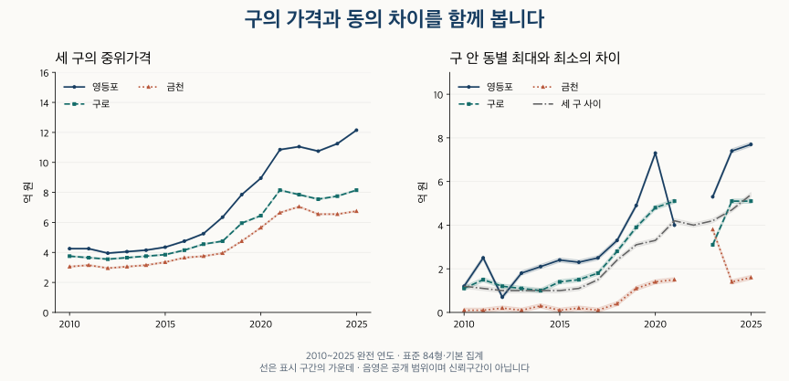

수도권 가격 지도 · 구 사이와 구 안의 차이
영등포·구로·금천 아파트 가격: 구 차이보다 동 차이가 클까?
영등포·구로·금천의 같은 84형 가격을 2010~2026년 같은 기간으로 비교합니다. 구 안의 동별 차이, 연식·거래 구성, 현재 대단지 비중과 비교가 어려운 조건을 확인하세요.
분석 기간 · 2010~2025년·같은 1~9월은 2026년까지 · 끝월 잠정 | 자료 기준일 · 거래 2026-10-04 · 재고 2026-10-02
영등포·구로·금천에서 같은 크기의 아파트를 찾을 때, 구 전체 가격만 보고 후보를 좁히면 구 안의 차이를 놓칠 수 있습니다. 2025년에는 영등포 안에서 확인된 동별 중위가격 차이가 세 구 사이의 차이보다 큽니다. 그러나 구로와 금천까지 같은 결론이 적용되지는 않습니다.
무엇을 같은 조건으로 비교했나요?
대상은 현재 단지 목록에서 영등포구·구로구·금천구에 속하는 아파트 매매입니다. 84형(전용 25·26평형)은 전용면적을 평으로 바꿔 반올림한 묶음으로 약 80.99㎡ 이상 87.60㎡ 미만입니다. 별도로 84㎡ 이상 85㎡ 미만의 좁은 면적도 비교합니다. 공급면적이나 매물 호가와는 구분합니다.
기본 집계는 긴 기간에 공통으로 적용한 정제 기준이며, 관측된 해제·직거래도 포함합니다. 제외 집계는 이 두 표시가 있는 계약을 뺍니다. 과거의 빈 표시를 정상 거래로 확인한 것은 아닙니다. 토지임대부는 제외하고, 계약마다 같은 비중을 준 중위가격과 25·75분위 경계를 계산했습니다.
구·연식별 가격은 40계약·10단지 이상, 동별 가격은 40계약·2단지 이상일 때 표시합니다. 동의 코드와 이름이 확인되지 않으면 구 집계에는 남기되 특정 동의 가격으로 제시하지 않습니다. 비교 유보는 거래가 없거나 가격이 같다는 뜻이 아닙니다.
가격은 0.1억 원 폭의 범위입니다. 예를 들어 12.1~12.2는 12.1억 원 이상 12.2억 원 미만입니다. 가격 차이는 이 공개 범위의 끝점을 이용해 바깥쪽으로 계산합니다. 표시 범위는 정확한 중위가격이나 통계적 신뢰구간이 아닙니다.
2010~2025년은 완전 연도끼리, 2026년은 과거의 같은 1~9월끼리 비교합니다. 두 달력창은 계약이 겹치므로 독립된 관측처럼 합쳐 세지 않습니다. 2026년 9월까지의 최근 계약은 잠정이며 이후 신고·해제로 달라질 수 있습니다.
세 구의 84형 가격 순서는 장기간 같았나요?
표준 84형·기본 집계의 전체 중위가격은 모든 완전 연도와 같은 1~9월에서 영등포, 구로, 금천 순서입니다. 2010년 완전 연도에는 각각 4.2~4.3억 원, 3.7~3.8억 원, 3.0~3.1억 원이었고, 2025년에는 12.1~12.2억 원, 8.1~8.2억 원, 6.7~6.8억 원입니다. 이는 거래된 주택의 대표값이며 같은 집의 가격 변화를 추적한 결과는 아닙니다.
| 기간 | 영등포구 | 구로구 | 금천구 | 세 구 최대−최소 |
|---|---|---|---|---|
| 2010년 전체 | 4.2~4.3 | 3.7~3.8 | 3.0~3.1 | 1.1~1.3 |
| 2011년 전체 | 4.2~4.3 | 3.6~3.7 | 3.1~3.2 | 1.0~1.2 |
| 2012년 전체 | 3.9~4.0 | 3.5~3.6 | 2.9~3.0 | 0.9~1.1 |
| 2013년 전체 | 4.0~4.1 | 3.6~3.7 | 3.0~3.1 | 0.9~1.1 |
| 2014년 전체 | 4.1~4.2 | 3.7~3.8 | 3.1~3.2 | 0.9~1.1 |
| 2015년 전체 | 4.3~4.4 | 3.8~3.9 | 3.3~3.4 | 0.9~1.1 |
| 2016년 전체 | 4.7~4.8 | 4.1~4.2 | 3.6~3.7 | 1.0~1.2 |
| 2017년 전체 | 5.2~5.3 | 4.5~4.6 | 3.7~3.8 | 1.4~1.6 |
| 2018년 전체 | 6.3~6.4 | 4.7~4.8 | 3.9~4.0 | 2.3~2.5 |
| 2019년 전체 | 7.8~7.9 | 5.9~6.0 | 4.7~4.8 | 3.0~3.2 |
| 2020년 전체 | 8.9~9.0 | 6.4~6.5 | 5.6~5.7 | 3.2~3.4 |
| 2021년 전체 | 10.8~10.9 | 8.1~8.2 | 6.6~6.7 | 4.1~4.3 |
| 2022년 전체 | 11.0~11.1 | 7.8~7.9 | 7.0~7.1 | 3.9~4.1 |
| 2023년 전체 | 10.7~10.8 | 7.5~7.6 | 6.5~6.6 | 4.1~4.3 |
| 2024년 전체 | 11.2~11.3 | 7.7~7.8 | 6.5~6.6 | 4.6~4.8 |
| 2025년 전체 | 12.1~12.2 | 8.1~8.2 | 6.7~6.8 | 5.3~5.5 |
2026년 1~9월에는 영등포 13.3~13.4억 원, 구로 7.9~8.0억 원, 금천 7.2~7.3억 원입니다. 이 값을 2025년 전체와 빼서 연간 상승·하락률로 읽지 않습니다. 아래 표에서 같은 1~9월끼리 비교할 수 있습니다.
모든 연도의 같은 1~9월 비교
| 기간 | 영등포구 | 구로구 | 금천구 | 세 구 최대−최소 |
|---|---|---|---|---|
| 2010년 1~9월 | 4.2~4.3 | 3.7~3.8 | 3.0~3.1 | 1.1~1.3 |
| 2011년 1~9월 | 4.2~4.3 | 3.6~3.7 | 3.1~3.2 | 1.0~1.2 |
| 2012년 1~9월 | 3.9~4.0 | 3.5~3.6 | 2.9~3.0 | 0.9~1.1 |
| 2013년 1~9월 | 3.9~4.0 | 3.6~3.7 | 2.9~3.0 | 0.9~1.1 |
| 2014년 1~9월 | 4.1~4.2 | 3.6~3.7 | 3.1~3.2 | 0.9~1.1 |
| 2015년 1~9월 | 4.3~4.4 | 3.8~3.9 | 3.3~3.4 | 0.9~1.1 |
| 2016년 1~9월 | 4.7~4.8 | 4.1~4.2 | 3.5~3.6 | 1.1~1.3 |
| 2017년 1~9월 | 5.1~5.2 | 4.4~4.5 | 3.6~3.7 | 1.4~1.6 |
| 2018년 1~9월 | 6.3~6.4 | 4.7~4.8 | 3.9~4.0 | 2.3~2.5 |
| 2019년 1~9월 | 7.7~7.8 | 5.7~5.8 | 4.5~4.6 | 3.1~3.3 |
| 2020년 1~9월 | 8.6~8.7 | 6.2~6.3 | 5.3~5.4 | 3.2~3.4 |
| 2021년 1~9월 | 10.8~10.9 | 8.0~8.1 | 6.6~6.7 | 4.1~4.3 |
| 2022년 1~9월 | 11.2~11.3 | 8.0~8.1 | 7.0~7.1 | 4.1~4.3 |
| 2023년 1~9월 | 10.9~11.0 | 7.5~7.6 | 6.6~6.7 | 4.2~4.4 |
| 2024년 1~9월 | 11.2~11.3 | 7.7~7.8 | 6.7~6.8 | 4.4~4.6 |
| 2025년 1~9월 | 12.1~12.2 | 8.0~8.1 | 6.5~6.6 | 5.5~5.7 |
| 2026년 1~9월 * | 13.3~13.4 | 7.9~8.0 | 7.2~7.3 | 6.0~6.2 |
중위가격의 순서만으로 지역 안의 선택 범위를 알 수는 없습니다. 가운데 절반의 계약 가격을 나타내는 25·75분위와 동별 범위를 함께 봅니다. 다음 분위 경계는 개별 매물의 최저·최고 가격이 아닙니다.
영등포 · 가격 분포의 가운데 절반
| 기간 | 하위 25% 경계 | 중위가격 | 상위 25% 경계 |
|---|---|---|---|
| 2010년 전체 | 3.7~3.8 | 4.2~4.3 | 4.7~4.8 |
| 2011년 전체 | 3.7~3.8 | 4.2~4.3 | 4.6~4.7 |
| 2012년 전체 | 3.4~3.5 | 3.9~4.0 | 4.4~4.5 |
| 2013년 전체 | 3.5~3.6 | 4.0~4.1 | 4.5~4.6 |
| 2014년 전체 | 3.6~3.7 | 4.1~4.2 | 4.5~4.6 |
| 2015년 전체 | 3.8~3.9 | 4.3~4.4 | 4.8~4.9 |
| 2016년 전체 | 4.2~4.3 | 4.7~4.8 | 5.3~5.4 |
| 2017년 전체 | 4.7~4.8 | 5.2~5.3 | 6.0~6.1 |
| 2018년 전체 | 5.4~5.5 | 6.3~6.4 | 7.5~7.6 |
| 2019년 전체 | 6.7~6.8 | 7.8~7.9 | 9.0~9.1 |
| 2020년 전체 | 7.5~7.6 | 8.9~9.0 | 10.9~11.0 |
| 2021년 전체 | 9.3~9.4 | 10.8~10.9 | 13.3~13.4 |
| 2022년 전체 | 9.5~9.6 | 11.0~11.1 | 13.1~13.2 |
| 2023년 전체 | 9.0~9.1 | 10.7~10.8 | 12.7~12.8 |
| 2024년 전체 | 9.5~9.6 | 11.2~11.3 | 13.5~13.6 |
| 2025년 전체 | 9.8~9.9 | 12.1~12.2 | 14.9~15.0 |
| 2010년 1~9월 | 3.7~3.8 | 4.2~4.3 | 4.7~4.8 |
| 2011년 1~9월 | 3.7~3.8 | 4.2~4.3 | 4.7~4.8 |
| 2012년 1~9월 | 3.4~3.5 | 3.9~4.0 | 4.3~4.4 |
| 2013년 1~9월 | 3.4~3.5 | 3.9~4.0 | 4.3~4.4 |
| 2014년 1~9월 | 3.6~3.7 | 4.1~4.2 | 4.4~4.5 |
| 2015년 1~9월 | 3.8~3.9 | 4.3~4.4 | 4.7~4.8 |
| 2016년 1~9월 | 4.1~4.2 | 4.7~4.8 | 5.3~5.4 |
| 2017년 1~9월 | 4.7~4.8 | 5.1~5.2 | 5.8~5.9 |
| 2018년 1~9월 | 5.4~5.5 | 6.3~6.4 | 7.4~7.5 |
| 2019년 1~9월 | 6.7~6.8 | 7.7~7.8 | 9.2~9.3 |
| 2020년 1~9월 | 7.2~7.3 | 8.6~8.7 | 10.4~10.5 |
| 2021년 1~9월 | 9.4~9.5 | 10.8~10.9 | 13.5~13.6 |
| 2022년 1~9월 | 9.5~9.6 | 11.2~11.3 | 13.2~13.3 |
| 2023년 1~9월 | 9.0~9.1 | 10.9~11.0 | 12.8~12.9 |
| 2024년 1~9월 | 9.5~9.6 | 11.2~11.3 | 13.5~13.6 |
| 2025년 1~9월 | 9.8~9.9 | 12.1~12.2 | 14.8~14.9 |
| 2026년 1~9월 * | 9.9~10.0 | 13.3~13.4 | 15.9~16.0 |
구로 · 가격 분포의 가운데 절반
| 기간 | 하위 25% 경계 | 중위가격 | 상위 25% 경계 |
|---|---|---|---|
| 2010년 전체 | 3.1~3.2 | 3.7~3.8 | 4.3~4.4 |
| 2011년 전체 | 3.1~3.2 | 3.6~3.7 | 4.2~4.3 |
| 2012년 전체 | 3.0~3.1 | 3.5~3.6 | 4.0~4.1 |
| 2013년 전체 | 3.1~3.2 | 3.6~3.7 | 3.9~4.0 |
| 2014년 전체 | 3.1~3.2 | 3.7~3.8 | 4.1~4.2 |
| 2015년 전체 | 3.2~3.3 | 3.8~3.9 | 4.3~4.4 |
| 2016년 전체 | 3.6~3.7 | 4.1~4.2 | 4.6~4.7 |
| 2017년 전체 | 3.9~4.0 | 4.5~4.6 | 5.0~5.1 |
| 2018년 전체 | 4.1~4.2 | 4.7~4.8 | 5.5~5.6 |
| 2019년 전체 | 4.9~5.0 | 5.9~6.0 | 7.2~7.3 |
| 2020년 전체 | 5.1~5.2 | 6.4~6.5 | 7.8~7.9 |
| 2021년 전체 | 6.9~7.0 | 8.1~8.2 | 9.4~9.5 |
| 2022년 전체 | 7.0~7.1 | 7.8~7.9 | 9.9~10.0 |
| 2023년 전체 | 6.5~6.6 | 7.5~7.6 | 8.9~9.0 |
| 2024년 전체 | 6.4~6.5 | 7.7~7.8 | 8.9~9.0 |
| 2025년 전체 | 6.8~6.9 | 8.1~8.2 | 9.6~9.7 |
| 2010년 1~9월 | 3.1~3.2 | 3.7~3.8 | 4.3~4.4 |
| 2011년 1~9월 | 3.1~3.2 | 3.6~3.7 | 4.3~4.4 |
| 2012년 1~9월 | 3.0~3.1 | 3.5~3.6 | 4.0~4.1 |
| 2013년 1~9월 | 3.1~3.2 | 3.6~3.7 | 3.9~4.0 |
| 2014년 1~9월 | 3.1~3.2 | 3.6~3.7 | 4.1~4.2 |
| 2015년 1~9월 | 3.2~3.3 | 3.8~3.9 | 4.3~4.4 |
| 2016년 1~9월 | 3.5~3.6 | 4.1~4.2 | 4.6~4.7 |
| 2017년 1~9월 | 3.8~3.9 | 4.4~4.5 | 5.0~5.1 |
| 2018년 1~9월 | 4.1~4.2 | 4.7~4.8 | 5.4~5.5 |
| 2019년 1~9월 | 4.7~4.8 | 5.7~5.8 | 7.0~7.1 |
| 2020년 1~9월 | 5.0~5.1 | 6.2~6.3 | 7.3~7.4 |
| 2021년 1~9월 | 6.9~7.0 | 8.0~8.1 | 9.2~9.3 |
| 2022년 1~9월 | 7.1~7.2 | 8.0~8.1 | 10.3~10.4 |
| 2023년 1~9월 | 6.4~6.5 | 7.5~7.6 | 8.8~8.9 |
| 2024년 1~9월 | 6.4~6.5 | 7.7~7.8 | 8.7~8.8 |
| 2025년 1~9월 | 6.7~6.8 | 8.0~8.1 | 9.5~9.6 |
| 2026년 1~9월 * | 6.8~6.9 | 7.9~8.0 | 9.4~9.5 |
금천 · 가격 분포의 가운데 절반
| 기간 | 하위 25% 경계 | 중위가격 | 상위 25% 경계 |
|---|---|---|---|
| 2010년 전체 | 2.8~2.9 | 3.0~3.1 | 3.3~3.4 |
| 2011년 전체 | 2.9~3.0 | 3.1~3.2 | 3.3~3.4 |
| 2012년 전체 | 2.7~2.8 | 2.9~3.0 | 3.1~3.2 |
| 2013년 전체 | 2.8~2.9 | 3.0~3.1 | 3.2~3.3 |
| 2014년 전체 | 2.9~3.0 | 3.1~3.2 | 3.3~3.4 |
| 2015년 전체 | 3.0~3.1 | 3.3~3.4 | 3.5~3.6 |
| 2016년 전체 | 3.3~3.4 | 3.6~3.7 | 3.9~4.0 |
| 2017년 전체 | 3.3~3.4 | 3.7~3.8 | 4.0~4.1 |
| 2018년 전체 | 3.6~3.7 | 3.9~4.0 | 4.7~4.8 |
| 2019년 전체 | 4.0~4.1 | 4.7~4.8 | 5.9~6.0 |
| 2020년 전체 | 4.6~4.7 | 5.6~5.7 | 6.8~6.9 |
| 2021년 전체 | 5.9~6.0 | 6.6~6.7 | 8.4~8.5 |
| 2022년 전체 | 5.7~5.8 | 7.0~7.1 | 8.4~8.5 |
| 2023년 전체 | 5.4~5.5 | 6.5~6.6 | 9.2~9.3 |
| 2024년 전체 | 5.6~5.7 | 6.5~6.6 | 8.8~8.9 |
| 2025년 전체 | 5.5~5.6 | 6.7~6.8 | 9.1~9.2 |
| 2010년 1~9월 | 2.8~2.9 | 3.0~3.1 | 3.3~3.4 |
| 2011년 1~9월 | 2.9~3.0 | 3.1~3.2 | 3.3~3.4 |
| 2012년 1~9월 | 2.7~2.8 | 2.9~3.0 | 3.1~3.2 |
| 2013년 1~9월 | 2.7~2.8 | 2.9~3.0 | 3.1~3.2 |
| 2014년 1~9월 | 2.9~3.0 | 3.1~3.2 | 3.3~3.4 |
| 2015년 1~9월 | 3.0~3.1 | 3.3~3.4 | 3.5~3.6 |
| 2016년 1~9월 | 3.2~3.3 | 3.5~3.6 | 3.8~3.9 |
| 2017년 1~9월 | 3.3~3.4 | 3.6~3.7 | 4.0~4.1 |
| 2018년 1~9월 | 3.5~3.6 | 3.9~4.0 | 4.7~4.8 |
| 2019년 1~9월 | 3.9~4.0 | 4.5~4.6 | 5.6~5.7 |
| 2020년 1~9월 | 4.4~4.5 | 5.3~5.4 | 6.7~6.8 |
| 2021년 1~9월 | 5.9~6.0 | 6.6~6.7 | 8.4~8.5 |
| 2022년 1~9월 | 6.2~6.3 | 7.0~7.1 | 8.4~8.5 |
| 2023년 1~9월 | 5.4~5.5 | 6.6~6.7 | 9.3~9.4 |
| 2024년 1~9월 | 5.7~5.8 | 6.7~6.8 | 9.0~9.1 |
| 2025년 1~9월 | 5.4~5.5 | 6.5~6.6 | 9.0~9.1 |
| 2026년 1~9월 * | 5.7~5.8 | 7.2~7.3 | 9.5~9.6 |
구 사이보다 같은 구 안의 동별 차이가 더 큰가요?
지역과 기간에 따라 답이 달라집니다. 구 사이의 차이는 세 구 중위가격의 최대와 최소 차이입니다. 구 안의 차이는 가격을 비교할 수 있는 동들의 중위가격 중 최대와 최소 차이입니다. 한 동에서 거래된 모든 집의 최저·최고 가격을 뜻하지 않습니다.

2025년 완전 연도에는 영등포의 동별 범위가 세 구 사이보다 크고, 구로·금천은 작습니다. 장기간에도 같은 대답 하나로 요약할 수 없습니다. 완전 연도 16개 중 영등포는 동별 범위가 큰 해 12개·작은 해 1개·범위 중첩 2개·유보 1개입니다. 구로는 각각 9개·2개·4개·1개, 금천은 0개·15개·0개·1개입니다.
| 기간 | 영등포구 안 | 구로구 안 | 금천구 안 | 세 구 사이 |
|---|---|---|---|---|
| 2010년 전체 | 1.1~1.3 | 1.0~1.2 | 0.0~0.2 | 1.1~1.3 |
| 2011년 전체 | 2.4~2.6 | 1.4~1.6 | 0.0~0.2 | 1.0~1.2 |
| 2012년 전체 | 0.6~0.8 | 1.1~1.3 | 0.1~0.3 | 0.9~1.1 |
| 2013년 전체 | 1.7~1.9 | 1.0~1.2 | 0.0~0.2 | 0.9~1.1 |
| 2014년 전체 | 2.0~2.2 | 0.9~1.1 | 0.2~0.4 | 0.9~1.1 |
| 2015년 전체 | 2.3~2.5 | 1.3~1.5 | 0.0~0.2 | 0.9~1.1 |
| 2016년 전체 | 2.2~2.4 | 1.4~1.6 | 0.1~0.3 | 1.0~1.2 |
| 2017년 전체 | 2.4~2.6 | 1.7~1.9 | 0.0~0.2 | 1.4~1.6 |
| 2018년 전체 | 3.2~3.4 | 2.7~2.9 | 0.3~0.5 | 2.3~2.5 |
| 2019년 전체 | 4.8~5.0 | 3.8~4.0 | 1.0~1.2 | 3.0~3.2 |
| 2020년 전체 | 7.2~7.4 | 4.7~4.9 | 1.3~1.5 | 3.2~3.4 |
| 2021년 전체 | 3.9~4.1 | 5.0~5.2 | 1.4~1.6 | 4.1~4.3 |
| 2022년 전체 | 비교 유보 | 비교 유보 | 비교 유보 | 3.9~4.1 |
| 2023년 전체 | 5.2~5.4 | 3.0~3.2 | 3.7~3.9 | 4.1~4.3 |
| 2024년 전체 | 7.3~7.5 | 5.0~5.2 | 1.3~1.5 | 4.6~4.8 |
| 2025년 전체 | 7.6~7.8 | 5.0~5.2 | 1.5~1.7 | 5.3~5.5 |
같은 1~9월의 구 안 동별 범위
| 기간 | 영등포구 안 | 구로구 안 | 금천구 안 | 세 구 사이 |
|---|---|---|---|---|
| 2010년 1~9월 | 0.7~0.9 | 1.0~1.2 | 비교 유보 | 1.1~1.3 |
| 2011년 1~9월 | 2.4~2.6 | 1.5~1.7 | 0.0~0.2 | 1.0~1.2 |
| 2012년 1~9월 | 0.6~0.8 | 1.0~1.2 | 0.0~0.2 | 0.9~1.1 |
| 2013년 1~9월 | 1.9~2.1 | 1.0~1.2 | 0.0~0.1 | 0.9~1.1 |
| 2014년 1~9월 | 2.0~2.2 | 0.9~1.1 | 0.0~0.2 | 0.9~1.1 |
| 2015년 1~9월 | 2.3~2.5 | 1.2~1.4 | 0.0~0.2 | 0.9~1.1 |
| 2016년 1~9월 | 2.2~2.4 | 1.3~1.5 | 0.1~0.3 | 1.1~1.3 |
| 2017년 1~9월 | 2.4~2.6 | 1.6~1.8 | 0.0~0.2 | 1.4~1.6 |
| 2018년 1~9월 | 3.1~3.3 | 2.6~2.8 | 0.2~0.4 | 2.3~2.5 |
| 2019년 1~9월 | 2.5~2.7 | 3.8~4.0 | 0.9~1.1 | 3.1~3.3 |
| 2020년 1~9월 | 7.2~7.4 | 4.4~4.6 | 1.4~1.6 | 3.2~3.4 |
| 2021년 1~9월 | 4.0~4.2 | 4.7~4.9 | 1.5~1.7 | 4.1~4.3 |
| 2022년 1~9월 | 비교 유보 | 비교 유보 | 비교 유보 | 4.1~4.3 |
| 2023년 1~9월 | 3.8~4.0 | 2.9~3.1 | 3.8~4.0 | 4.2~4.4 |
| 2024년 1~9월 | 7.3~7.5 | 4.9~5.1 | 1.3~1.5 | 4.4~4.6 |
| 2025년 1~9월 | 7.7~7.9 | 4.7~4.9 | 1.3~1.5 | 5.5~5.7 |
| 2026년 1~9월 * | 7.3~7.5 | 6.7~6.9 | 2.6~2.8 | 6.0~6.2 |
2026년 1~9월의 동별 차이는 영등포 7.3~7.5억 원, 구로 6.7~6.9억 원, 금천 2.6~2.8억 원입니다. 세 구 사이의 6.0~6.2억 원과 비교하면 영등포·구로는 크고 금천은 작습니다. 이것을 2025년 전체에서 최근까지의 변화로 곧바로 해석하지 않습니다.
가장 큰 반론은 비교에 들어온 동이 일부라는 점입니다. 2025년 영등포의 동별 범위에 포함된 계약은 구 전체의 70~80% 범위이고, 구로·금천은 각각 90~100% 범위입니다. 표본이 적거나 동을 확인하지 못한 계약은 동별 범위에서 빠집니다. 모든 동을 포함했을 때의 범위와 같다고 보장할 수 없습니다.
영등포 · 동 범위의 계약 포함률과 결손
| 기간 | 범위의 대소 | 포함 계약 비중 | 동 미확인 비중 |
|---|---|---|---|
| 2010년 전체 | 구간 중첩 | 40~50 | 0~10 |
| 2011년 전체 | 동 범위가 큼 | 60~70 | 0~10 |
| 2012년 전체 | 구 사이가 큼 | 40~50 | 0~10 |
| 2013년 전체 | 동 범위가 큼 | 70~80 | 0~10 |
| 2014년 전체 | 동 범위가 큼 | 60~70 | 0~10 |
| 2015년 전체 | 동 범위가 큼 | 80~90 | 0~10 |
| 2016년 전체 | 동 범위가 큼 | 80~90 | 0~10 |
| 2017년 전체 | 동 범위가 큼 | 70~80 | 0~10 |
| 2018년 전체 | 동 범위가 큼 | 60~70 | 0~10 |
| 2019년 전체 | 동 범위가 큼 | 60~70 | 0~10 |
| 2020년 전체 | 동 범위가 큼 | 70~80 | 0~10 |
| 2021년 전체 | 구간 중첩 | 40~50 | 0~10 |
| 2022년 전체 | 비교 유보 | 0~10 | 0~10 |
| 2023년 전체 | 동 범위가 큼 | 50~60 | 0~10 |
| 2024년 전체 | 동 범위가 큼 | 70~80 | 0~10 |
| 2025년 전체 | 동 범위가 큼 | 70~80 | 0~10 |
| 2010년 1~9월 | 구 사이가 큼 | 30~40 | 0~10 |
| 2011년 1~9월 | 동 범위가 큼 | 50~60 | 0~10 |
| 2012년 1~9월 | 구 사이가 큼 | 30~40 | 0~10 |
| 2013년 1~9월 | 동 범위가 큼 | 60~70 | 0~10 |
| 2014년 1~9월 | 동 범위가 큼 | 60~70 | 0~10 |
| 2015년 1~9월 | 동 범위가 큼 | 70~80 | 0~10 |
| 2016년 1~9월 | 동 범위가 큼 | 70~80 | 0~10 |
| 2017년 1~9월 | 동 범위가 큼 | 60~70 | 0~10 |
| 2018년 1~9월 | 동 범위가 큼 | 60~70 | 0~10 |
| 2019년 1~9월 | 구 사이가 큼 | 50~60 | 0~10 |
| 2020년 1~9월 | 동 범위가 큼 | 70~80 | 0~10 |
| 2021년 1~9월 | 구간 중첩 | 40~50 | 0~10 |
| 2022년 1~9월 | 비교 유보 | 0~10 | 0~10 |
| 2023년 1~9월 | 구 사이가 큼 | 40~50 | 0~10 |
| 2024년 1~9월 | 동 범위가 큼 | 70~80 | 0~10 |
| 2025년 1~9월 | 동 범위가 큼 | 70~80 | 0~10 |
| 2026년 1~9월 * | 동 범위가 큼 | 60~70 | 0~10 |
구로 · 동 범위의 계약 포함률과 결손
| 기간 | 범위의 대소 | 포함 계약 비중 | 동 미확인 비중 |
|---|---|---|---|
| 2010년 전체 | 구간 중첩 | 90~100 | 0~10 |
| 2011년 전체 | 동 범위가 큼 | 90~100 | 0~10 |
| 2012년 전체 | 구간 중첩 | 90~100 | 0~10 |
| 2013년 전체 | 구간 중첩 | 90~100 | 0~10 |
| 2014년 전체 | 구간 중첩 | 90~100 | 0~10 |
| 2015년 전체 | 동 범위가 큼 | 90~100 | 0~10 |
| 2016년 전체 | 동 범위가 큼 | 90~100 | 0~10 |
| 2017년 전체 | 동 범위가 큼 | 90~100 | 0~10 |
| 2018년 전체 | 동 범위가 큼 | 90~100 | 0~10 |
| 2019년 전체 | 동 범위가 큼 | 90~100 | 0~10 |
| 2020년 전체 | 동 범위가 큼 | 90~100 | 0~10 |
| 2021년 전체 | 동 범위가 큼 | 80~90 | 0~10 |
| 2022년 전체 | 비교 유보 | 0~10 | 0~10 |
| 2023년 전체 | 구 사이가 큼 | 80~90 | 0~10 |
| 2024년 전체 | 동 범위가 큼 | 90~100 | 0~10 |
| 2025년 전체 | 구 사이가 큼 | 90~100 | 0~10 |
| 2010년 1~9월 | 구간 중첩 | 90~100 | 0~10 |
| 2011년 1~9월 | 동 범위가 큼 | 90~100 | 0~10 |
| 2012년 1~9월 | 구간 중첩 | 80~90 | 0~10 |
| 2013년 1~9월 | 구간 중첩 | 90~100 | 0~10 |
| 2014년 1~9월 | 구간 중첩 | 90~100 | 0~10 |
| 2015년 1~9월 | 동 범위가 큼 | 90~100 | 0~10 |
| 2016년 1~9월 | 구간 중첩 | 90~100 | 0~10 |
| 2017년 1~9월 | 구간 중첩 | 90~100 | 0~10 |
| 2018년 1~9월 | 동 범위가 큼 | 90~100 | 0~10 |
| 2019년 1~9월 | 동 범위가 큼 | 90~100 | 0~10 |
| 2020년 1~9월 | 동 범위가 큼 | 90~100 | 0~10 |
| 2021년 1~9월 | 동 범위가 큼 | 80~90 | 0~10 |
| 2022년 1~9월 | 비교 유보 | 0~10 | 0~10 |
| 2023년 1~9월 | 구 사이가 큼 | 80~90 | 0~10 |
| 2024년 1~9월 | 동 범위가 큼 | 90~100 | 0~10 |
| 2025년 1~9월 | 구 사이가 큼 | 90~100 | 0~10 |
| 2026년 1~9월 * | 동 범위가 큼 | 90~100 | 0~10 |
금천 · 동 범위의 계약 포함률과 결손
| 기간 | 범위의 대소 | 포함 계약 비중 | 동 미확인 비중 |
|---|---|---|---|
| 2010년 전체 | 구 사이가 큼 | 80~90 | 0~10 |
| 2011년 전체 | 구 사이가 큼 | 90~100 | 0~10 |
| 2012년 전체 | 구 사이가 큼 | 비교 유보 | 0~10 |
| 2013년 전체 | 구 사이가 큼 | 90~100 | 0~10 |
| 2014년 전체 | 구 사이가 큼 | 90~100 | 0~10 |
| 2015년 전체 | 구 사이가 큼 | 90~100 | 0~10 |
| 2016년 전체 | 구 사이가 큼 | 90~100 | 0~10 |
| 2017년 전체 | 구 사이가 큼 | 90~100 | 0~10 |
| 2018년 전체 | 구 사이가 큼 | 90~100 | 0~10 |
| 2019년 전체 | 구 사이가 큼 | 90~100 | 0~10 |
| 2020년 전체 | 구 사이가 큼 | 90~100 | 0~10 |
| 2021년 전체 | 구 사이가 큼 | 90~100 | 0~10 |
| 2022년 전체 | 비교 유보 | 0~10 | 0~10 |
| 2023년 전체 | 구 사이가 큼 | 비교 유보 | 0~10 |
| 2024년 전체 | 구 사이가 큼 | 90~100 | 0~10 |
| 2025년 전체 | 구 사이가 큼 | 90~100 | 0~10 |
| 2010년 1~9월 | 비교 유보 | 50~60 | 0~10 |
| 2011년 1~9월 | 구 사이가 큼 | 90~100 | 0~10 |
| 2012년 1~9월 | 구 사이가 큼 | 비교 유보 | 0~10 |
| 2013년 1~9월 | 구 사이가 큼 | 90~100 | 0~10 |
| 2014년 1~9월 | 구 사이가 큼 | 90~100 | 0~10 |
| 2015년 1~9월 | 구 사이가 큼 | 90~100 | 0~10 |
| 2016년 1~9월 | 구 사이가 큼 | 90~100 | 0~10 |
| 2017년 1~9월 | 구 사이가 큼 | 90~100 | 0~10 |
| 2018년 1~9월 | 구 사이가 큼 | 90~100 | 0~10 |
| 2019년 1~9월 | 구 사이가 큼 | 90~100 | 0~10 |
| 2020년 1~9월 | 구 사이가 큼 | 90~100 | 0~10 |
| 2021년 1~9월 | 구 사이가 큼 | 90~100 | 0~10 |
| 2022년 1~9월 | 비교 유보 | 0~10 | 0~10 |
| 2023년 1~9월 | 구 사이가 큼 | 비교 유보 | 0~10 |
| 2024년 1~9월 | 구 사이가 큼 | 90~100 | 0~10 |
| 2025년 1~9월 | 구 사이가 큼 | 90~100 | 0~10 |
| 2026년 1~9월 * | 구 사이가 큼 | 90~100 | 0~10 |
아래 동별 표는 현재 법정동을 기준으로 합니다. 행정동이나 부동산 광고의 생활권과 경계가 같다고 가정하지 않습니다. 최근 두 기간은 각각의 수준을 보여 주며, 기간 길이가 다른 두 열의 차이를 상승률로 쓰지 않습니다.
최근 두 기간의 모든 확인된 법정동
| 지역 | 현재 법정동 | 2025년 전체 | 2026년 1~9월 * |
|---|---|---|---|
| 영등포구 | 당산동 | 비교 유보 | 비교 유보 |
| 영등포구 | 당산동1가 | 비교 유보 | 비교 유보 |
| 영등포구 | 당산동2가 | 비교 유보 | 비교 유보 |
| 영등포구 | 당산동3가 | 비교 유보 | 비교 유보 |
| 영등포구 | 당산동4가 | 13.5~13.6 | 16.0~16.1 |
| 영등포구 | 당산동5가 | 16.4~16.5 | 비교 유보 |
| 영등포구 | 당산동6가 | 비교 유보 | 비교 유보 |
| 영등포구 | 대림동 | 9.0~9.1 | 8.6~8.7 |
| 영등포구 | 도림동 | 12.3~12.4 | 비교 유보 |
| 영등포구 | 문래동2가 | 비교 유보 | 비교 유보 |
| 영등포구 | 문래동3가 | 14.7~14.8 | 비교 유보 |
| 영등포구 | 문래동4가 | 비교 유보 | 비교 유보 |
| 영등포구 | 문래동5가 | 비교 유보 | 비교 유보 |
| 영등포구 | 문래동6가 | 비교 유보 | 비교 유보 |
| 영등포구 | 신길동 | 13.5~13.6 | 14.2~14.3 |
| 영등포구 | 양평동1가 | 비교 유보 | 비교 유보 |
| 영등포구 | 양평동2가 | 비교 유보 | 비교 유보 |
| 영등포구 | 양평동3가 | 10.8~10.9 | 12.9~13.0 |
| 영등포구 | 양평동4가 | 비교 유보 | 비교 유보 |
| 영등포구 | 양평동5가 | 비교 유보 | 비교 유보 |
| 영등포구 | 양평동6가 | 비교 유보 | 비교 유보 |
| 영등포구 | 여의도동 | 비교 유보 | 비교 유보 |
| 영등포구 | 영등포동 | 비교 유보 | 비교 유보 |
| 영등포구 | 영등포동1가 | 비교 유보 | 비교 유보 |
| 영등포구 | 영등포동2가 | 비교 유보 | 비교 유보 |
| 영등포구 | 영등포동3가 | 비교 유보 | 비교 유보 |
| 영등포구 | 영등포동4가 | 비교 유보 | 비교 유보 |
| 영등포구 | 영등포동5가 | 비교 유보 | 비교 유보 |
| 영등포구 | 영등포동7가 | 16.7~16.8 | 비교 유보 |
| 영등포구 | 영등포동8가 | 비교 유보 | 비교 유보 |
| 구로구 | 가리봉동 | 비교 유보 | 비교 유보 |
| 구로구 | 개봉동 | 7.7~7.8 | 8.5~8.6 |
| 구로구 | 고척동 | 7.8~7.9 | 7.4~7.5 |
| 구로구 | 구로동 | 7.7~7.8 | 7.6~7.7 |
| 구로구 | 궁동 | 비교 유보 | 비교 유보 |
| 구로구 | 신도림동 | 11.5~11.6 | 13.2~13.3 |
| 구로구 | 오류동 | 6.4~6.5 | 6.4~6.5 |
| 구로구 | 온수동 | 비교 유보 | 비교 유보 |
| 구로구 | 천왕동 | 비교 유보 | 7.7~7.8 |
| 구로구 | 항동 | 8.0~8.1 | 7.9~8.0 |
| 금천구 | 가산동 | 비교 유보 | 비교 유보 |
| 금천구 | 독산동 | 7.4~7.5 | 8.5~8.6 |
| 금천구 | 시흥동 | 5.8~5.9 | 5.8~5.9 |
거래가 많은 단지를 빼거나 연식을 맞춰도 같을까요?
최다 거래 단지를 제외하면 동별 범위의 대소가 달라질 수 있습니다. 2025년 구로는 전체 계약에서 동별 범위가 세 구 사이보다 작지만, 제외 뒤에는 두 범위가 겹쳐 대소를 정할 수 없습니다. 영등포·금천은 같은 기간 각각 큰 쪽·작은 쪽이라는 방향을 유지합니다.
각 구와 각 동에서 계약이 가장 많은 단지 하나를 따로 뺐습니다. 같은 단지 하나를 모든 지역에서 일괄 제외한 비교가 아닙니다. 건수가 같으면 미리 정한 단지 순서로 고르며, 남은 계약에 원래 표본 기준을 다시 적용합니다. 이는 거래 집중에 대한 민감도이고, 비싼 주택의 효과만 제거한 정답은 아닙니다.
다음 표는 모든 기간을 빠짐없이 보여 줍니다. ‘좁은 면적’은 84㎡ 이상 85㎡ 미만이며, ‘제외’는 관측 해제·직거래 제외입니다. 최다 거래 단지 제외는 표 제목에서 구분합니다. 범위가 겹치는 곳은 실제 값이 같다고 단정하지 않고 중첩으로 남겼습니다.
전체 계약 · 모든 면적/정제 조건과 기간
| 기간 | 지역 | 표준·기본 | 좁은 면적·기본 | 표준·제외 | 좁은 면적·제외 |
|---|---|---|---|---|---|
| 2010년 전체 | 영등포구 | 구간 중첩 | 구간 중첩 | 구간 중첩 | 구간 중첩 |
| 2010년 전체 | 구로구 | 구간 중첩 | 구간 중첩 | 구간 중첩 | 구간 중첩 |
| 2010년 전체 | 금천구 | 구 사이가 큼 | 구 사이가 큼 | 구 사이가 큼 | 구 사이가 큼 |
| 2011년 전체 | 영등포구 | 동 범위가 큼 | 동 범위가 큼 | 동 범위가 큼 | 동 범위가 큼 |
| 2011년 전체 | 구로구 | 동 범위가 큼 | 동 범위가 큼 | 동 범위가 큼 | 동 범위가 큼 |
| 2011년 전체 | 금천구 | 구 사이가 큼 | 구 사이가 큼 | 구 사이가 큼 | 구 사이가 큼 |
| 2012년 전체 | 영등포구 | 구 사이가 큼 | 구 사이가 큼 | 구 사이가 큼 | 구 사이가 큼 |
| 2012년 전체 | 구로구 | 구간 중첩 | 구간 중첩 | 구간 중첩 | 구간 중첩 |
| 2012년 전체 | 금천구 | 구 사이가 큼 | 구 사이가 큼 | 구 사이가 큼 | 구 사이가 큼 |
| 2013년 전체 | 영등포구 | 동 범위가 큼 | 동 범위가 큼 | 동 범위가 큼 | 동 범위가 큼 |
| 2013년 전체 | 구로구 | 구간 중첩 | 동 범위가 큼 | 구간 중첩 | 동 범위가 큼 |
| 2013년 전체 | 금천구 | 구 사이가 큼 | 구 사이가 큼 | 구 사이가 큼 | 구 사이가 큼 |
| 2014년 전체 | 영등포구 | 동 범위가 큼 | 동 범위가 큼 | 동 범위가 큼 | 동 범위가 큼 |
| 2014년 전체 | 구로구 | 구간 중첩 | 구간 중첩 | 구간 중첩 | 구간 중첩 |
| 2014년 전체 | 금천구 | 구 사이가 큼 | 구 사이가 큼 | 구 사이가 큼 | 구 사이가 큼 |
| 2015년 전체 | 영등포구 | 동 범위가 큼 | 동 범위가 큼 | 동 범위가 큼 | 동 범위가 큼 |
| 2015년 전체 | 구로구 | 동 범위가 큼 | 동 범위가 큼 | 동 범위가 큼 | 동 범위가 큼 |
| 2015년 전체 | 금천구 | 구 사이가 큼 | 구 사이가 큼 | 구 사이가 큼 | 구 사이가 큼 |
| 2016년 전체 | 영등포구 | 동 범위가 큼 | 동 범위가 큼 | 동 범위가 큼 | 동 범위가 큼 |
| 2016년 전체 | 구로구 | 동 범위가 큼 | 동 범위가 큼 | 동 범위가 큼 | 동 범위가 큼 |
| 2016년 전체 | 금천구 | 구 사이가 큼 | 구 사이가 큼 | 구 사이가 큼 | 구 사이가 큼 |
| 2017년 전체 | 영등포구 | 동 범위가 큼 | 동 범위가 큼 | 동 범위가 큼 | 동 범위가 큼 |
| 2017년 전체 | 구로구 | 동 범위가 큼 | 동 범위가 큼 | 동 범위가 큼 | 동 범위가 큼 |
| 2017년 전체 | 금천구 | 구 사이가 큼 | 구 사이가 큼 | 구 사이가 큼 | 구 사이가 큼 |
| 2018년 전체 | 영등포구 | 동 범위가 큼 | 동 범위가 큼 | 동 범위가 큼 | 동 범위가 큼 |
| 2018년 전체 | 구로구 | 동 범위가 큼 | 동 범위가 큼 | 동 범위가 큼 | 동 범위가 큼 |
| 2018년 전체 | 금천구 | 구 사이가 큼 | 구 사이가 큼 | 구 사이가 큼 | 구 사이가 큼 |
| 2019년 전체 | 영등포구 | 동 범위가 큼 | 동 범위가 큼 | 동 범위가 큼 | 동 범위가 큼 |
| 2019년 전체 | 구로구 | 동 범위가 큼 | 동 범위가 큼 | 동 범위가 큼 | 동 범위가 큼 |
| 2019년 전체 | 금천구 | 구 사이가 큼 | 구 사이가 큼 | 구 사이가 큼 | 구 사이가 큼 |
| 2020년 전체 | 영등포구 | 동 범위가 큼 | 동 범위가 큼 | 동 범위가 큼 | 동 범위가 큼 |
| 2020년 전체 | 구로구 | 동 범위가 큼 | 동 범위가 큼 | 동 범위가 큼 | 동 범위가 큼 |
| 2020년 전체 | 금천구 | 구 사이가 큼 | 구 사이가 큼 | 구 사이가 큼 | 구 사이가 큼 |
| 2021년 전체 | 영등포구 | 구간 중첩 | 구간 중첩 | 구간 중첩 | 구간 중첩 |
| 2021년 전체 | 구로구 | 동 범위가 큼 | 동 범위가 큼 | 동 범위가 큼 | 동 범위가 큼 |
| 2021년 전체 | 금천구 | 구 사이가 큼 | 구 사이가 큼 | 구 사이가 큼 | 구 사이가 큼 |
| 2022년 전체 | 영등포구 | 비교 유보 | 비교 유보 | 비교 유보 | 비교 유보 |
| 2022년 전체 | 구로구 | 비교 유보 | 비교 유보 | 비교 유보 | 비교 유보 |
| 2022년 전체 | 금천구 | 비교 유보 | 비교 유보 | 비교 유보 | 비교 유보 |
| 2023년 전체 | 영등포구 | 동 범위가 큼 | 동 범위가 큼 | 동 범위가 큼 | 동 범위가 큼 |
| 2023년 전체 | 구로구 | 구 사이가 큼 | 구 사이가 큼 | 구 사이가 큼 | 구 사이가 큼 |
| 2023년 전체 | 금천구 | 구 사이가 큼 | 구 사이가 큼 | 구간 중첩 | 구 사이가 큼 |
| 2024년 전체 | 영등포구 | 동 범위가 큼 | 동 범위가 큼 | 동 범위가 큼 | 동 범위가 큼 |
| 2024년 전체 | 구로구 | 동 범위가 큼 | 동 범위가 큼 | 동 범위가 큼 | 동 범위가 큼 |
| 2024년 전체 | 금천구 | 구 사이가 큼 | 구 사이가 큼 | 구 사이가 큼 | 구 사이가 큼 |
| 2025년 전체 | 영등포구 | 동 범위가 큼 | 동 범위가 큼 | 동 범위가 큼 | 동 범위가 큼 |
| 2025년 전체 | 구로구 | 구 사이가 큼 | 구간 중첩 | 구 사이가 큼 | 구간 중첩 |
| 2025년 전체 | 금천구 | 구 사이가 큼 | 구 사이가 큼 | 구 사이가 큼 | 구 사이가 큼 |
| 2010년 1~9월 | 영등포구 | 구 사이가 큼 | 구 사이가 큼 | 구 사이가 큼 | 구 사이가 큼 |
| 2010년 1~9월 | 구로구 | 구간 중첩 | 구간 중첩 | 구간 중첩 | 구간 중첩 |
| 2010년 1~9월 | 금천구 | 비교 유보 | 비교 유보 | 비교 유보 | 비교 유보 |
| 2011년 1~9월 | 영등포구 | 동 범위가 큼 | 동 범위가 큼 | 동 범위가 큼 | 동 범위가 큼 |
| 2011년 1~9월 | 구로구 | 동 범위가 큼 | 동 범위가 큼 | 동 범위가 큼 | 동 범위가 큼 |
| 2011년 1~9월 | 금천구 | 구 사이가 큼 | 구 사이가 큼 | 구 사이가 큼 | 구 사이가 큼 |
| 2012년 1~9월 | 영등포구 | 구 사이가 큼 | 구간 중첩 | 구 사이가 큼 | 구간 중첩 |
| 2012년 1~9월 | 구로구 | 구간 중첩 | 동 범위가 큼 | 구간 중첩 | 동 범위가 큼 |
| 2012년 1~9월 | 금천구 | 구 사이가 큼 | 비교 유보 | 구 사이가 큼 | 비교 유보 |
| 2013년 1~9월 | 영등포구 | 동 범위가 큼 | 동 범위가 큼 | 동 범위가 큼 | 동 범위가 큼 |
| 2013년 1~9월 | 구로구 | 구간 중첩 | 동 범위가 큼 | 구간 중첩 | 동 범위가 큼 |
| 2013년 1~9월 | 금천구 | 구 사이가 큼 | 구 사이가 큼 | 구 사이가 큼 | 구 사이가 큼 |
| 2014년 1~9월 | 영등포구 | 동 범위가 큼 | 동 범위가 큼 | 동 범위가 큼 | 동 범위가 큼 |
| 2014년 1~9월 | 구로구 | 구간 중첩 | 구간 중첩 | 구간 중첩 | 구간 중첩 |
| 2014년 1~9월 | 금천구 | 구 사이가 큼 | 구 사이가 큼 | 구 사이가 큼 | 구 사이가 큼 |
| 2015년 1~9월 | 영등포구 | 동 범위가 큼 | 동 범위가 큼 | 동 범위가 큼 | 동 범위가 큼 |
| 2015년 1~9월 | 구로구 | 동 범위가 큼 | 동 범위가 큼 | 동 범위가 큼 | 동 범위가 큼 |
| 2015년 1~9월 | 금천구 | 구 사이가 큼 | 구 사이가 큼 | 구 사이가 큼 | 구 사이가 큼 |
| 2016년 1~9월 | 영등포구 | 동 범위가 큼 | 동 범위가 큼 | 동 범위가 큼 | 동 범위가 큼 |
| 2016년 1~9월 | 구로구 | 구간 중첩 | 동 범위가 큼 | 구간 중첩 | 동 범위가 큼 |
| 2016년 1~9월 | 금천구 | 구 사이가 큼 | 구 사이가 큼 | 구 사이가 큼 | 구 사이가 큼 |
| 2017년 1~9월 | 영등포구 | 동 범위가 큼 | 동 범위가 큼 | 동 범위가 큼 | 동 범위가 큼 |
| 2017년 1~9월 | 구로구 | 구간 중첩 | 동 범위가 큼 | 구간 중첩 | 동 범위가 큼 |
| 2017년 1~9월 | 금천구 | 구 사이가 큼 | 구 사이가 큼 | 구 사이가 큼 | 구 사이가 큼 |
| 2018년 1~9월 | 영등포구 | 동 범위가 큼 | 동 범위가 큼 | 동 범위가 큼 | 동 범위가 큼 |
| 2018년 1~9월 | 구로구 | 동 범위가 큼 | 동 범위가 큼 | 동 범위가 큼 | 동 범위가 큼 |
| 2018년 1~9월 | 금천구 | 구 사이가 큼 | 구 사이가 큼 | 구 사이가 큼 | 구 사이가 큼 |
| 2019년 1~9월 | 영등포구 | 구 사이가 큼 | 구 사이가 큼 | 구 사이가 큼 | 구 사이가 큼 |
| 2019년 1~9월 | 구로구 | 동 범위가 큼 | 동 범위가 큼 | 동 범위가 큼 | 동 범위가 큼 |
| 2019년 1~9월 | 금천구 | 구 사이가 큼 | 구 사이가 큼 | 구 사이가 큼 | 구 사이가 큼 |
| 2020년 1~9월 | 영등포구 | 동 범위가 큼 | 동 범위가 큼 | 동 범위가 큼 | 동 범위가 큼 |
| 2020년 1~9월 | 구로구 | 동 범위가 큼 | 동 범위가 큼 | 동 범위가 큼 | 동 범위가 큼 |
| 2020년 1~9월 | 금천구 | 구 사이가 큼 | 구 사이가 큼 | 구 사이가 큼 | 구 사이가 큼 |
| 2021년 1~9월 | 영등포구 | 구간 중첩 | 구 사이가 큼 | 구간 중첩 | 구 사이가 큼 |
| 2021년 1~9월 | 구로구 | 동 범위가 큼 | 동 범위가 큼 | 동 범위가 큼 | 동 범위가 큼 |
| 2021년 1~9월 | 금천구 | 구 사이가 큼 | 구 사이가 큼 | 구 사이가 큼 | 구 사이가 큼 |
| 2022년 1~9월 | 영등포구 | 비교 유보 | 비교 유보 | 비교 유보 | 비교 유보 |
| 2022년 1~9월 | 구로구 | 비교 유보 | 비교 유보 | 비교 유보 | 비교 유보 |
| 2022년 1~9월 | 금천구 | 비교 유보 | 비교 유보 | 비교 유보 | 비교 유보 |
| 2023년 1~9월 | 영등포구 | 구 사이가 큼 | 구간 중첩 | 구 사이가 큼 | 구간 중첩 |
| 2023년 1~9월 | 구로구 | 구 사이가 큼 | 구 사이가 큼 | 구 사이가 큼 | 구 사이가 큼 |
| 2023년 1~9월 | 금천구 | 구 사이가 큼 | 구 사이가 큼 | 구간 중첩 | 구간 중첩 |
| 2024년 1~9월 | 영등포구 | 동 범위가 큼 | 동 범위가 큼 | 동 범위가 큼 | 동 범위가 큼 |
| 2024년 1~9월 | 구로구 | 동 범위가 큼 | 동 범위가 큼 | 동 범위가 큼 | 동 범위가 큼 |
| 2024년 1~9월 | 금천구 | 구 사이가 큼 | 구 사이가 큼 | 구 사이가 큼 | 구 사이가 큼 |
| 2025년 1~9월 | 영등포구 | 동 범위가 큼 | 동 범위가 큼 | 동 범위가 큼 | 동 범위가 큼 |
| 2025년 1~9월 | 구로구 | 구 사이가 큼 | 구 사이가 큼 | 구 사이가 큼 | 구 사이가 큼 |
| 2025년 1~9월 | 금천구 | 구 사이가 큼 | 구 사이가 큼 | 구 사이가 큼 | 구 사이가 큼 |
| 2026년 1~9월 * | 영등포구 | 동 범위가 큼 | 동 범위가 큼 | 동 범위가 큼 | 동 범위가 큼 |
| 2026년 1~9월 * | 구로구 | 동 범위가 큼 | 동 범위가 큼 | 동 범위가 큼 | 동 범위가 큼 |
| 2026년 1~9월 * | 금천구 | 구 사이가 큼 | 구 사이가 큼 | 구 사이가 큼 | 구 사이가 큼 |
최다 거래 단지 제외 · 모든 면적/정제 조건과 기간
| 기간 | 지역 | 표준·기본 | 좁은 면적·기본 | 표준·제외 | 좁은 면적·제외 |
|---|---|---|---|---|---|
| 2010년 전체 | 영등포구 | 구 사이가 큼 | 구간 중첩 | 구 사이가 큼 | 구간 중첩 |
| 2010년 전체 | 구로구 | 구간 중첩 | 구간 중첩 | 구간 중첩 | 구간 중첩 |
| 2010년 전체 | 금천구 | 비교 유보 | 비교 유보 | 비교 유보 | 비교 유보 |
| 2011년 전체 | 영등포구 | 구간 중첩 | 구간 중첩 | 구간 중첩 | 구간 중첩 |
| 2011년 전체 | 구로구 | 동 범위가 큼 | 동 범위가 큼 | 동 범위가 큼 | 동 범위가 큼 |
| 2011년 전체 | 금천구 | 구 사이가 큼 | 비교 유보 | 구 사이가 큼 | 비교 유보 |
| 2012년 전체 | 영등포구 | 구 사이가 큼 | 구 사이가 큼 | 구 사이가 큼 | 구 사이가 큼 |
| 2012년 전체 | 구로구 | 동 범위가 큼 | 동 범위가 큼 | 동 범위가 큼 | 동 범위가 큼 |
| 2012년 전체 | 금천구 | 구 사이가 큼 | 구 사이가 큼 | 구 사이가 큼 | 구 사이가 큼 |
| 2013년 전체 | 영등포구 | 동 범위가 큼 | 동 범위가 큼 | 동 범위가 큼 | 동 범위가 큼 |
| 2013년 전체 | 구로구 | 구간 중첩 | 구간 중첩 | 구간 중첩 | 구간 중첩 |
| 2013년 전체 | 금천구 | 구 사이가 큼 | 구 사이가 큼 | 구 사이가 큼 | 구 사이가 큼 |
| 2014년 전체 | 영등포구 | 동 범위가 큼 | 동 범위가 큼 | 동 범위가 큼 | 동 범위가 큼 |
| 2014년 전체 | 구로구 | 동 범위가 큼 | 동 범위가 큼 | 동 범위가 큼 | 동 범위가 큼 |
| 2014년 전체 | 금천구 | 구 사이가 큼 | 구 사이가 큼 | 구 사이가 큼 | 구 사이가 큼 |
| 2015년 전체 | 영등포구 | 동 범위가 큼 | 동 범위가 큼 | 동 범위가 큼 | 동 범위가 큼 |
| 2015년 전체 | 구로구 | 동 범위가 큼 | 동 범위가 큼 | 동 범위가 큼 | 동 범위가 큼 |
| 2015년 전체 | 금천구 | 구 사이가 큼 | 구 사이가 큼 | 구 사이가 큼 | 구 사이가 큼 |
| 2016년 전체 | 영등포구 | 동 범위가 큼 | 동 범위가 큼 | 동 범위가 큼 | 동 범위가 큼 |
| 2016년 전체 | 구로구 | 동 범위가 큼 | 동 범위가 큼 | 동 범위가 큼 | 동 범위가 큼 |
| 2016년 전체 | 금천구 | 구 사이가 큼 | 구 사이가 큼 | 구 사이가 큼 | 구 사이가 큼 |
| 2017년 전체 | 영등포구 | 동 범위가 큼 | 동 범위가 큼 | 동 범위가 큼 | 동 범위가 큼 |
| 2017년 전체 | 구로구 | 동 범위가 큼 | 동 범위가 큼 | 동 범위가 큼 | 동 범위가 큼 |
| 2017년 전체 | 금천구 | 구 사이가 큼 | 구 사이가 큼 | 구 사이가 큼 | 구 사이가 큼 |
| 2018년 전체 | 영등포구 | 구간 중첩 | 구 사이가 큼 | 구간 중첩 | 구 사이가 큼 |
| 2018년 전체 | 구로구 | 동 범위가 큼 | 동 범위가 큼 | 동 범위가 큼 | 동 범위가 큼 |
| 2018년 전체 | 금천구 | 구 사이가 큼 | 구 사이가 큼 | 구 사이가 큼 | 구 사이가 큼 |
| 2019년 전체 | 영등포구 | 구 사이가 큼 | 구 사이가 큼 | 구 사이가 큼 | 구 사이가 큼 |
| 2019년 전체 | 구로구 | 동 범위가 큼 | 동 범위가 큼 | 동 범위가 큼 | 동 범위가 큼 |
| 2019년 전체 | 금천구 | 구 사이가 큼 | 구 사이가 큼 | 구 사이가 큼 | 구 사이가 큼 |
| 2020년 전체 | 영등포구 | 동 범위가 큼 | 동 범위가 큼 | 동 범위가 큼 | 동 범위가 큼 |
| 2020년 전체 | 구로구 | 동 범위가 큼 | 동 범위가 큼 | 동 범위가 큼 | 동 범위가 큼 |
| 2020년 전체 | 금천구 | 구 사이가 큼 | 구 사이가 큼 | 구 사이가 큼 | 구 사이가 큼 |
| 2021년 전체 | 영등포구 | 구 사이가 큼 | 구 사이가 큼 | 구 사이가 큼 | 구 사이가 큼 |
| 2021년 전체 | 구로구 | 동 범위가 큼 | 동 범위가 큼 | 동 범위가 큼 | 동 범위가 큼 |
| 2021년 전체 | 금천구 | 구 사이가 큼 | 구 사이가 큼 | 구 사이가 큼 | 구 사이가 큼 |
| 2022년 전체 | 영등포구 | 비교 유보 | 비교 유보 | 비교 유보 | 비교 유보 |
| 2022년 전체 | 구로구 | 비교 유보 | 비교 유보 | 비교 유보 | 비교 유보 |
| 2022년 전체 | 금천구 | 비교 유보 | 비교 유보 | 비교 유보 | 비교 유보 |
| 2023년 전체 | 영등포구 | 동 범위가 큼 | 동 범위가 큼 | 동 범위가 큼 | 동 범위가 큼 |
| 2023년 전체 | 구로구 | 구간 중첩 | 구간 중첩 | 구간 중첩 | 구간 중첩 |
| 2023년 전체 | 금천구 | 구 사이가 큼 | 구 사이가 큼 | 구 사이가 큼 | 구 사이가 큼 |
| 2024년 전체 | 영등포구 | 구간 중첩 | 구간 중첩 | 구간 중첩 | 구간 중첩 |
| 2024년 전체 | 구로구 | 동 범위가 큼 | 동 범위가 큼 | 동 범위가 큼 | 동 범위가 큼 |
| 2024년 전체 | 금천구 | 동 범위가 큼 | 동 범위가 큼 | 구간 중첩 | 구간 중첩 |
| 2025년 전체 | 영등포구 | 동 범위가 큼 | 동 범위가 큼 | 동 범위가 큼 | 동 범위가 큼 |
| 2025년 전체 | 구로구 | 구간 중첩 | 동 범위가 큼 | 동 범위가 큼 | 동 범위가 큼 |
| 2025년 전체 | 금천구 | 구 사이가 큼 | 구 사이가 큼 | 구 사이가 큼 | 구 사이가 큼 |
| 2010년 1~9월 | 영등포구 | 비교 유보 | 비교 유보 | 비교 유보 | 비교 유보 |
| 2010년 1~9월 | 구로구 | 구간 중첩 | 동 범위가 큼 | 구간 중첩 | 동 범위가 큼 |
| 2010년 1~9월 | 금천구 | 비교 유보 | 비교 유보 | 비교 유보 | 비교 유보 |
| 2011년 1~9월 | 영등포구 | 구간 중첩 | 구간 중첩 | 구간 중첩 | 구간 중첩 |
| 2011년 1~9월 | 구로구 | 동 범위가 큼 | 동 범위가 큼 | 동 범위가 큼 | 동 범위가 큼 |
| 2011년 1~9월 | 금천구 | 비교 유보 | 비교 유보 | 비교 유보 | 비교 유보 |
| 2012년 1~9월 | 영등포구 | 구 사이가 큼 | 구 사이가 큼 | 구 사이가 큼 | 구 사이가 큼 |
| 2012년 1~9월 | 구로구 | 동 범위가 큼 | 동 범위가 큼 | 동 범위가 큼 | 동 범위가 큼 |
| 2012년 1~9월 | 금천구 | 비교 유보 | 비교 유보 | 비교 유보 | 비교 유보 |
| 2013년 1~9월 | 영등포구 | 구 사이가 큼 | 구 사이가 큼 | 구 사이가 큼 | 구 사이가 큼 |
| 2013년 1~9월 | 구로구 | 구간 중첩 | 동 범위가 큼 | 구간 중첩 | 동 범위가 큼 |
| 2013년 1~9월 | 금천구 | 구 사이가 큼 | 구 사이가 큼 | 구 사이가 큼 | 구 사이가 큼 |
| 2014년 1~9월 | 영등포구 | 구간 중첩 | 구간 중첩 | 구간 중첩 | 구간 중첩 |
| 2014년 1~9월 | 구로구 | 구간 중첩 | 동 범위가 큼 | 구간 중첩 | 동 범위가 큼 |
| 2014년 1~9월 | 금천구 | 구 사이가 큼 | 구 사이가 큼 | 구 사이가 큼 | 구 사이가 큼 |
| 2015년 1~9월 | 영등포구 | 동 범위가 큼 | 동 범위가 큼 | 동 범위가 큼 | 동 범위가 큼 |
| 2015년 1~9월 | 구로구 | 동 범위가 큼 | 동 범위가 큼 | 동 범위가 큼 | 동 범위가 큼 |
| 2015년 1~9월 | 금천구 | 구 사이가 큼 | 구 사이가 큼 | 구 사이가 큼 | 구 사이가 큼 |
| 2016년 1~9월 | 영등포구 | 동 범위가 큼 | 동 범위가 큼 | 동 범위가 큼 | 동 범위가 큼 |
| 2016년 1~9월 | 구로구 | 동 범위가 큼 | 동 범위가 큼 | 동 범위가 큼 | 동 범위가 큼 |
| 2016년 1~9월 | 금천구 | 구 사이가 큼 | 구 사이가 큼 | 구 사이가 큼 | 구 사이가 큼 |
| 2017년 1~9월 | 영등포구 | 동 범위가 큼 | 동 범위가 큼 | 동 범위가 큼 | 동 범위가 큼 |
| 2017년 1~9월 | 구로구 | 동 범위가 큼 | 동 범위가 큼 | 동 범위가 큼 | 동 범위가 큼 |
| 2017년 1~9월 | 금천구 | 구 사이가 큼 | 구 사이가 큼 | 구 사이가 큼 | 구 사이가 큼 |
| 2018년 1~9월 | 영등포구 | 구간 중첩 | 구 사이가 큼 | 구간 중첩 | 구 사이가 큼 |
| 2018년 1~9월 | 구로구 | 동 범위가 큼 | 동 범위가 큼 | 동 범위가 큼 | 동 범위가 큼 |
| 2018년 1~9월 | 금천구 | 구 사이가 큼 | 구 사이가 큼 | 구 사이가 큼 | 구 사이가 큼 |
| 2019년 1~9월 | 영등포구 | 구 사이가 큼 | 구 사이가 큼 | 구 사이가 큼 | 구 사이가 큼 |
| 2019년 1~9월 | 구로구 | 동 범위가 큼 | 동 범위가 큼 | 동 범위가 큼 | 동 범위가 큼 |
| 2019년 1~9월 | 금천구 | 구 사이가 큼 | 구 사이가 큼 | 구 사이가 큼 | 구 사이가 큼 |
| 2020년 1~9월 | 영등포구 | 구간 중첩 | 구간 중첩 | 구간 중첩 | 구간 중첩 |
| 2020년 1~9월 | 구로구 | 동 범위가 큼 | 동 범위가 큼 | 동 범위가 큼 | 동 범위가 큼 |
| 2020년 1~9월 | 금천구 | 구 사이가 큼 | 구 사이가 큼 | 구 사이가 큼 | 구 사이가 큼 |
| 2021년 1~9월 | 영등포구 | 구 사이가 큼 | 구 사이가 큼 | 구 사이가 큼 | 구 사이가 큼 |
| 2021년 1~9월 | 구로구 | 동 범위가 큼 | 동 범위가 큼 | 동 범위가 큼 | 동 범위가 큼 |
| 2021년 1~9월 | 금천구 | 구 사이가 큼 | 구 사이가 큼 | 구 사이가 큼 | 구 사이가 큼 |
| 2022년 1~9월 | 영등포구 | 비교 유보 | 비교 유보 | 비교 유보 | 비교 유보 |
| 2022년 1~9월 | 구로구 | 비교 유보 | 비교 유보 | 비교 유보 | 비교 유보 |
| 2022년 1~9월 | 금천구 | 비교 유보 | 비교 유보 | 비교 유보 | 비교 유보 |
| 2023년 1~9월 | 영등포구 | 비교 유보 | 비교 유보 | 비교 유보 | 비교 유보 |
| 2023년 1~9월 | 구로구 | 구간 중첩 | 구간 중첩 | 구간 중첩 | 구간 중첩 |
| 2023년 1~9월 | 금천구 | 구 사이가 큼 | 구 사이가 큼 | 비교 유보 | 비교 유보 |
| 2024년 1~9월 | 영등포구 | 동 범위가 큼 | 동 범위가 큼 | 동 범위가 큼 | 구간 중첩 |
| 2024년 1~9월 | 구로구 | 동 범위가 큼 | 동 범위가 큼 | 구간 중첩 | 구간 중첩 |
| 2024년 1~9월 | 금천구 | 동 범위가 큼 | 동 범위가 큼 | 구간 중첩 | 구간 중첩 |
| 2025년 1~9월 | 영등포구 | 동 범위가 큼 | 동 범위가 큼 | 동 범위가 큼 | 동 범위가 큼 |
| 2025년 1~9월 | 구로구 | 구간 중첩 | 구간 중첩 | 구간 중첩 | 구간 중첩 |
| 2025년 1~9월 | 금천구 | 구 사이가 큼 | 구 사이가 큼 | 구 사이가 큼 | 구 사이가 큼 |
| 2026년 1~9월 * | 영등포구 | 동 범위가 큼 | 동 범위가 큼 | 동 범위가 큼 | 구 사이가 큼 |
| 2026년 1~9월 * | 구로구 | 동 범위가 큼 | 동 범위가 큼 | 동 범위가 큼 | 동 범위가 큼 |
| 2026년 1~9월 * | 금천구 | 구 사이가 큼 | 구 사이가 큼 | 구 사이가 큼 | 구 사이가 큼 |
같은 연식끼리 보면 어떨까요? 당시 연식은 계약연도에서 현재 목록의 준공연도를 뺀 값입니다. 표준 84형·기본 집계에서 같은 연식으로 두 지역을 비교할 수 있는 기간에는 영등포가 구로보다, 영등포·구로가 금천보다 높은 순서가 유지됩니다. 다만 세 지역의 모든 연식과 모든 해가 동시에 비교되는 것은 아닙니다.
특히 연식 0~4년과 30년 이상에서는 금천을 포함한 비교에 빈칸이 많습니다. 빈칸을 구 전체 가격으로 채우면 연식을 맞춘 비교가 사라집니다. 같은 연식 구간에서도 입지·층·정비 기대·단지 규모가 다르므로 지역 이름 자체의 가격 효과로 읽지 않습니다.
같은 연식 0~4년 · 전 기간
| 기간 | 영등포구 | 구로구 | 금천구 |
|---|---|---|---|
| 2010년 전체 | 4.2~4.3 | 3.6~3.7 | 비교 유보 |
| 2011년 전체 | 4.4~4.5 | 3.3~3.4 | 비교 유보 |
| 2012년 전체 | 3.9~4.0 | 3.7~3.8 | 비교 유보 |
| 2013년 전체 | 비교 유보 | 3.9~4.0 | 비교 유보 |
| 2014년 전체 | 비교 유보 | 4.0~4.1 | 비교 유보 |
| 2015년 전체 | 비교 유보 | 4.2~4.3 | 비교 유보 |
| 2016년 전체 | 비교 유보 | 비교 유보 | 비교 유보 |
| 2017년 전체 | 비교 유보 | 비교 유보 | 비교 유보 |
| 2018년 전체 | 비교 유보 | 비교 유보 | 비교 유보 |
| 2019년 전체 | 비교 유보 | 비교 유보 | 비교 유보 |
| 2020년 전체 | 비교 유보 | 비교 유보 | 비교 유보 |
| 2021년 전체 | 15.5~15.6 | 비교 유보 | 비교 유보 |
| 2022년 전체 | 비교 유보 | 비교 유보 | 비교 유보 |
| 2023년 전체 | 12.7~12.8 | 비교 유보 | 비교 유보 |
| 2024년 전체 | 13.9~14.0 | 비교 유보 | 비교 유보 |
| 2025년 전체 | 비교 유보 | 비교 유보 | 비교 유보 |
| 2010년 1~9월 | 비교 유보 | 3.5~3.6 | 비교 유보 |
| 2011년 1~9월 | 4.5~4.6 | 3.7~3.8 | 비교 유보 |
| 2012년 1~9월 | 비교 유보 | 3.7~3.8 | 비교 유보 |
| 2013년 1~9월 | 비교 유보 | 3.9~4.0 | 비교 유보 |
| 2014년 1~9월 | 비교 유보 | 3.9~4.0 | 비교 유보 |
| 2015년 1~9월 | 비교 유보 | 4.2~4.3 | 비교 유보 |
| 2016년 1~9월 | 비교 유보 | 비교 유보 | 비교 유보 |
| 2017년 1~9월 | 비교 유보 | 비교 유보 | 비교 유보 |
| 2018년 1~9월 | 비교 유보 | 비교 유보 | 비교 유보 |
| 2019년 1~9월 | 비교 유보 | 비교 유보 | 비교 유보 |
| 2020년 1~9월 | 비교 유보 | 비교 유보 | 비교 유보 |
| 2021년 1~9월 | 15.5~15.6 | 비교 유보 | 비교 유보 |
| 2022년 1~9월 | 비교 유보 | 비교 유보 | 비교 유보 |
| 2023년 1~9월 | 비교 유보 | 비교 유보 | 비교 유보 |
| 2024년 1~9월 | 13.9~14.0 | 비교 유보 | 비교 유보 |
| 2025년 1~9월 | 비교 유보 | 비교 유보 | 비교 유보 |
| 2026년 1~9월 * | 비교 유보 | 비교 유보 | 비교 유보 |
같은 연식 5~9년 · 전 기간
| 기간 | 영등포구 | 구로구 | 금천구 |
|---|---|---|---|
| 2010년 전체 | 4.7~4.8 | 3.8~3.9 | 3.0~3.1 |
| 2011년 전체 | 4.6~4.7 | 3.9~4.0 | 3.2~3.3 |
| 2012년 전체 | 4.2~4.3 | 3.9~4.0 | 3.0~3.1 |
| 2013년 전체 | 4.2~4.3 | 3.6~3.7 | 3.0~3.1 |
| 2014년 전체 | 4.3~4.4 | 3.7~3.8 | 3.3~3.4 |
| 2015년 전체 | 4.3~4.4 | 4.0~4.1 | 비교 유보 |
| 2016년 전체 | 4.7~4.8 | 4.2~4.3 | 비교 유보 |
| 2017년 전체 | 5.0~5.1 | 4.5~4.6 | 비교 유보 |
| 2018년 전체 | 비교 유보 | 4.8~4.9 | 비교 유보 |
| 2019년 전체 | 비교 유보 | 6.0~6.1 | 비교 유보 |
| 2020년 전체 | 비교 유보 | 6.9~7.0 | 비교 유보 |
| 2021년 전체 | 비교 유보 | 비교 유보 | 비교 유보 |
| 2022년 전체 | 비교 유보 | 비교 유보 | 비교 유보 |
| 2023년 전체 | 비교 유보 | 비교 유보 | 비교 유보 |
| 2024년 전체 | 비교 유보 | 비교 유보 | 비교 유보 |
| 2025년 전체 | 16.0~16.1 | 비교 유보 | 비교 유보 |
| 2010년 1~9월 | 4.7~4.8 | 3.9~4.0 | 3.1~3.2 |
| 2011년 1~9월 | 4.6~4.7 | 3.9~4.0 | 3.2~3.3 |
| 2012년 1~9월 | 4.3~4.4 | 3.9~4.0 | 3.0~3.1 |
| 2013년 1~9월 | 4.1~4.2 | 3.6~3.7 | 3.0~3.1 |
| 2014년 1~9월 | 4.2~4.3 | 3.7~3.8 | 3.3~3.4 |
| 2015년 1~9월 | 4.3~4.4 | 4.0~4.1 | 비교 유보 |
| 2016년 1~9월 | 4.7~4.8 | 4.2~4.3 | 비교 유보 |
| 2017년 1~9월 | 5.0~5.1 | 4.5~4.6 | 비교 유보 |
| 2018년 1~9월 | 비교 유보 | 4.8~4.9 | 비교 유보 |
| 2019년 1~9월 | 비교 유보 | 5.9~6.0 | 비교 유보 |
| 2020년 1~9월 | 비교 유보 | 6.8~6.9 | 비교 유보 |
| 2021년 1~9월 | 비교 유보 | 비교 유보 | 비교 유보 |
| 2022년 1~9월 | 비교 유보 | 비교 유보 | 비교 유보 |
| 2023년 1~9월 | 비교 유보 | 비교 유보 | 비교 유보 |
| 2024년 1~9월 | 비교 유보 | 비교 유보 | 비교 유보 |
| 2025년 1~9월 | 15.9~16.0 | 비교 유보 | 비교 유보 |
| 2026년 1~9월 * | 18.8~18.9 | 비교 유보 | 비교 유보 |
같은 연식 10~19년 · 전 기간
| 기간 | 영등포구 | 구로구 | 금천구 |
|---|---|---|---|
| 2010년 전체 | 4.0~4.1 | 3.6~3.7 | 2.9~3.0 |
| 2011년 전체 | 4.1~4.2 | 3.5~3.6 | 2.9~3.0 |
| 2012년 전체 | 4.0~4.1 | 3.4~3.5 | 2.7~2.8 |
| 2013년 전체 | 4.0~4.1 | 3.5~3.6 | 2.8~2.9 |
| 2014년 전체 | 4.1~4.2 | 3.6~3.7 | 3.0~3.1 |
| 2015년 전체 | 4.4~4.5 | 3.8~3.9 | 3.2~3.3 |
| 2016년 전체 | 4.9~5.0 | 4.1~4.2 | 3.5~3.6 |
| 2017년 전체 | 5.4~5.5 | 4.5~4.6 | 3.6~3.7 |
| 2018년 전체 | 6.3~6.4 | 4.9~5.0 | 3.8~3.9 |
| 2019년 전체 | 7.9~8.0 | 6.2~6.3 | 4.2~4.3 |
| 2020년 전체 | 9.0~9.1 | 6.7~6.8 | 5.4~5.5 |
| 2021년 전체 | 10.0~10.1 | 8.2~8.3 | 6.6~6.7 |
| 2022년 전체 | 비교 유보 | 7.8~7.9 | 비교 유보 |
| 2023년 전체 | 9.0~9.1 | 7.3~7.4 | 5.7~5.8 |
| 2024년 전체 | 10.0~10.1 | 7.5~7.6 | 비교 유보 |
| 2025년 전체 | 12.2~12.3 | 8.1~8.2 | 비교 유보 |
| 2010년 1~9월 | 4.1~4.2 | 3.4~3.5 | 비교 유보 |
| 2011년 1~9월 | 4.2~4.3 | 3.5~3.6 | 2.9~3.0 |
| 2012년 1~9월 | 4.0~4.1 | 3.4~3.5 | 2.8~2.9 |
| 2013년 1~9월 | 4.0~4.1 | 3.5~3.6 | 2.8~2.9 |
| 2014년 1~9월 | 4.1~4.2 | 3.6~3.7 | 3.0~3.1 |
| 2015년 1~9월 | 4.3~4.4 | 3.8~3.9 | 3.2~3.3 |
| 2016년 1~9월 | 4.8~4.9 | 4.1~4.2 | 3.4~3.5 |
| 2017년 1~9월 | 5.3~5.4 | 4.5~4.6 | 3.6~3.7 |
| 2018년 1~9월 | 6.3~6.4 | 4.9~5.0 | 3.8~3.9 |
| 2019년 1~9월 | 8.0~8.1 | 6.0~6.1 | 4.1~4.2 |
| 2020년 1~9월 | 8.6~8.7 | 6.5~6.6 | 5.0~5.1 |
| 2021년 1~9월 | 10.5~10.6 | 8.2~8.3 | 6.5~6.6 |
| 2022년 1~9월 | 비교 유보 | 8.5~8.6 | 비교 유보 |
| 2023년 1~9월 | 9.0~9.1 | 7.3~7.4 | 5.5~5.6 |
| 2024년 1~9월 | 9.9~10.0 | 7.5~7.6 | 비교 유보 |
| 2025년 1~9월 | 12.1~12.2 | 8.1~8.2 | 비교 유보 |
| 2026년 1~9월 * | 11.0~11.1 | 8.1~8.2 | 비교 유보 |
같은 연식 20~29년 · 전 기간
| 기간 | 영등포구 | 구로구 | 금천구 |
|---|---|---|---|
| 2010년 전체 | 4.1~4.2 | 비교 유보 | 비교 유보 |
| 2011년 전체 | 4.0~4.1 | 비교 유보 | 비교 유보 |
| 2012년 전체 | 3.3~3.4 | 3.1~3.2 | 비교 유보 |
| 2013년 전체 | 3.3~3.4 | 3.0~3.1 | 비교 유보 |
| 2014년 전체 | 3.6~3.7 | 3.1~3.2 | 비교 유보 |
| 2015년 전체 | 3.8~3.9 | 3.2~3.3 | 비교 유보 |
| 2016년 전체 | 4.2~4.3 | 3.4~3.5 | 비교 유보 |
| 2017년 전체 | 5.0~5.1 | 3.6~3.7 | 비교 유보 |
| 2018년 전체 | 5.7~5.8 | 3.9~4.0 | 3.8~3.9 |
| 2019년 전체 | 7.0~7.1 | 4.9~5.0 | 4.4~4.5 |
| 2020년 전체 | 8.3~8.4 | 5.4~5.5 | 4.4~4.5 |
| 2021년 전체 | 10.2~10.3 | 7.6~7.7 | 5.9~6.0 |
| 2022년 전체 | 11.0~11.1 | 7.5~7.6 | 비교 유보 |
| 2023년 전체 | 10.0~10.1 | 7.5~7.6 | 5.5~5.6 |
| 2024년 전체 | 10.4~10.5 | 7.9~8.0 | 5.9~6.0 |
| 2025년 전체 | 10.9~11.0 | 8.2~8.3 | 5.7~5.8 |
| 2010년 1~9월 | 비교 유보 | 비교 유보 | 비교 유보 |
| 2011년 1~9월 | 4.0~4.1 | 비교 유보 | 비교 유보 |
| 2012년 1~9월 | 3.3~3.4 | 비교 유보 | 비교 유보 |
| 2013년 1~9월 | 3.3~3.4 | 3.1~3.2 | 비교 유보 |
| 2014년 1~9월 | 3.6~3.7 | 3.1~3.2 | 비교 유보 |
| 2015년 1~9월 | 3.8~3.9 | 3.2~3.3 | 비교 유보 |
| 2016년 1~9월 | 4.2~4.3 | 3.4~3.5 | 비교 유보 |
| 2017년 1~9월 | 5.0~5.1 | 3.6~3.7 | 비교 유보 |
| 2018년 1~9월 | 5.7~5.8 | 3.9~4.0 | 3.8~3.9 |
| 2019년 1~9월 | 6.9~7.0 | 4.8~4.9 | 4.1~4.2 |
| 2020년 1~9월 | 8.0~8.1 | 5.2~5.3 | 4.3~4.4 |
| 2021년 1~9월 | 10.2~10.3 | 7.5~7.6 | 5.9~6.0 |
| 2022년 1~9월 | 비교 유보 | 7.6~7.7 | 비교 유보 |
| 2023년 1~9월 | 10.0~10.1 | 7.5~7.6 | 5.4~5.5 |
| 2024년 1~9월 | 10.4~10.5 | 7.8~7.9 | 5.9~6.0 |
| 2025년 1~9월 | 10.9~11.0 | 8.0~8.1 | 5.6~5.7 |
| 2026년 1~9월 * | 12.6~12.7 | 8.1~8.2 | 5.9~6.0 |
같은 연식 30년 이상 · 전 기간
| 기간 | 영등포구 | 구로구 | 금천구 |
|---|---|---|---|
| 2010년 전체 | 비교 유보 | 비교 유보 | 비교 유보 |
| 2011년 전체 | 비교 유보 | 비교 유보 | 비교 유보 |
| 2012년 전체 | 비교 유보 | 비교 유보 | 비교 유보 |
| 2013년 전체 | 비교 유보 | 비교 유보 | 비교 유보 |
| 2014년 전체 | 비교 유보 | 비교 유보 | 비교 유보 |
| 2015년 전체 | 비교 유보 | 비교 유보 | 비교 유보 |
| 2016년 전체 | 4.7~4.8 | 비교 유보 | 비교 유보 |
| 2017년 전체 | 5.1~5.2 | 비교 유보 | 비교 유보 |
| 2018년 전체 | 6.6~6.7 | 비교 유보 | 비교 유보 |
| 2019년 전체 | 7.5~7.6 | 비교 유보 | 비교 유보 |
| 2020년 전체 | 9.3~9.4 | 비교 유보 | 비교 유보 |
| 2021년 전체 | 10.1~10.2 | 비교 유보 | 비교 유보 |
| 2022년 전체 | 비교 유보 | 비교 유보 | 비교 유보 |
| 2023년 전체 | 8.3~8.4 | 비교 유보 | 비교 유보 |
| 2024년 전체 | 9.7~9.8 | 6.8~6.9 | 비교 유보 |
| 2025년 전체 | 9.9~10.0 | 7.2~7.3 | 비교 유보 |
| 2010년 1~9월 | 비교 유보 | 비교 유보 | 비교 유보 |
| 2011년 1~9월 | 비교 유보 | 비교 유보 | 비교 유보 |
| 2012년 1~9월 | 비교 유보 | 비교 유보 | 비교 유보 |
| 2013년 1~9월 | 비교 유보 | 비교 유보 | 비교 유보 |
| 2014년 1~9월 | 비교 유보 | 비교 유보 | 비교 유보 |
| 2015년 1~9월 | 비교 유보 | 비교 유보 | 비교 유보 |
| 2016년 1~9월 | 4.6~4.7 | 비교 유보 | 비교 유보 |
| 2017년 1~9월 | 5.0~5.1 | 비교 유보 | 비교 유보 |
| 2018년 1~9월 | 6.6~6.7 | 비교 유보 | 비교 유보 |
| 2019년 1~9월 | 7.4~7.5 | 비교 유보 | 비교 유보 |
| 2020년 1~9월 | 8.9~9.0 | 비교 유보 | 비교 유보 |
| 2021년 1~9월 | 비교 유보 | 비교 유보 | 비교 유보 |
| 2022년 1~9월 | 비교 유보 | 비교 유보 | 비교 유보 |
| 2023년 1~9월 | 8.1~8.2 | 비교 유보 | 비교 유보 |
| 2024년 1~9월 | 9.7~9.8 | 6.4~6.5 | 비교 유보 |
| 2025년 1~9월 | 9.8~9.9 | 7.8~7.9 | 비교 유보 |
| 2026년 1~9월 * | 10.8~10.9 | 7.1~7.2 | 비교 유보 |
현재의 연식과 대단지 구성은 얼마나 다른가요?
현재 남은 아파트의 구성은 과거 거래에 어떤 주택이 섞였는지와 다른 질문입니다. 아래 표는 전 면적을 대상으로 연식 0~9년·10~29년·30년 이상·미상을 구분합니다. 가격 표의 당시 연식 0~4년과 경계도 다릅니다.
전체 목록에서 30년 이상 단지 비중은 영등포 20~30%, 구로 30~40%, 금천 10~20% 범위입니다. 확인된 세대수로 비중을 주면 각각 30~40%, 20~30%, 10~20% 범위입니다. 단지 수로 읽은 구성과 세대수로 읽은 구성이 같지 않습니다.
전체와 면적자료 집합의 현재 연식 비교
| 지역·모집단 | 연식 | 단지 비중 | 확인 세대수 비중 | 세대수 확인 단지 비중 |
|---|---|---|---|---|
| 영등포구 전체 | 0~9년 | 10~20 | 10~20 | 90~100 |
| 영등포구 전체 | 10~29년 | 60~70 | 40~50 | 90~100 |
| 영등포구 전체 | 30년 이상 | 20~30 | 30~40 | 90~100 |
| 영등포구 전체 | 미상 | 0~10 | 0~10 | 90~100 |
| 영등포구 면적자료 | 0~9년 | 10~20 | 10~20 | 90~100 |
| 영등포구 면적자료 | 10~29년 | 50~60 | 40~50 | 90~100 |
| 영등포구 면적자료 | 30년 이상 | 30~40 | 30~40 | 90~100 |
| 영등포구 면적자료 | 미상 | 0~10 | 0~10 | 90~100 |
| 구로구 전체 | 0~9년 | 0~10 | 0~10 | 90~100 |
| 구로구 전체 | 10~29년 | 50~60 | 60~70 | 90~100 |
| 구로구 전체 | 30년 이상 | 30~40 | 20~30 | 90~100 |
| 구로구 전체 | 미상 | 0~10 | 0~10 | 90~100 |
| 구로구 면적자료 | 0~9년 | 10~20 | 0~10 | 90~100 |
| 구로구 면적자료 | 10~29년 | 60~70 | 60~70 | 90~100 |
| 구로구 면적자료 | 30년 이상 | 20~30 | 20~30 | 90~100 |
| 구로구 면적자료 | 미상 | 0~10 | 0~10 | 90~100 |
| 금천구 전체 | 0~9년 | 10~20 | 10~20 | 90~100 |
| 금천구 전체 | 10~29년 | 70~80 | 60~70 | 90~100 |
| 금천구 전체 | 30년 이상 | 10~20 | 10~20 | 90~100 |
| 금천구 전체 | 미상 | 0~10 | 0~10 | 90~100 |
| 금천구 면적자료 | 0~9년 | 비교 유보 | 비교 유보 | 90~100 |
| 금천구 면적자료 | 10~29년 | 비교 유보 | 비교 유보 | 90~100 |
| 금천구 면적자료 | 30년 이상 | 비교 유보 | 비교 유보 | 90~100 |
| 금천구 면적자료 | 미상 | 비교 유보 | 비교 유보 | 90~100 |
‘전체’는 현재 목록이며, ‘면적자료’는 면적별 세대수 합계가 채택된 단지만 남긴 집합입니다. 세대수는 해당 단지의 전 면적 합계로, 84형에 배분한 세대수가 아닙니다. 금천의 면적자료 집합은 연식별 구성의 일부에 기여 단지가 적어 전체 연식 비중을 유보했습니다. 현재 목록으로 과거 당시의 모든 재고를 복원한 것도 아닙니다.
대단지의 주 기준은 1,000세대 이상입니다. 세대수가 알려진 전체 목록에서 이 규모의 세대수 비중은 영등포·구로 모두 20~30% 범위입니다. 금천은 공개 조건을 충족하지 못해 유보했습니다. 따라서 세 구의 1,000세대 이상 비중 비교가 완성됐다고 말할 수 없습니다.
| 지역·모집단 | 규모 기준 | 단지 비중 | 세대수 비중 |
|---|---|---|---|
| 영등포구 전체 | 1,000세대 이상 · 주 기준 | 0~10 | 20~30 |
| 영등포구 전체 | 500세대 이상 · 별도 조건 | 10~20 | 40~50 |
| 영등포구 면적자료 | 1,000세대 이상 · 주 기준 | 0~10 | 20~30 |
| 영등포구 면적자료 | 500세대 이상 · 별도 조건 | 20~30 | 50~60 |
| 구로구 전체 | 1,000세대 이상 · 주 기준 | 0~10 | 20~30 |
| 구로구 전체 | 500세대 이상 · 별도 조건 | 0~10 | 50~60 |
| 구로구 면적자료 | 1,000세대 이상 · 주 기준 | 0~10 | 20~30 |
| 구로구 면적자료 | 500세대 이상 · 별도 조건 | 20~30 | 50~60 |
| 금천구 전체 | 1,000세대 이상 · 주 기준 | 비교 유보 | 비교 유보 |
| 금천구 전체 | 500세대 이상 · 별도 조건 | 0~10 | 60~70 |
| 금천구 면적자료 | 1,000세대 이상 · 주 기준 | 비교 유보 | 비교 유보 |
| 금천구 면적자료 | 500세대 이상 · 별도 조건 | 30~40 | 70~80 |
처음부터 따로 정한 500세대 이상 조건에서는 전체 목록의 세대수 비중이 영등포 40~50%, 구로 50~60%, 금천 60~70% 범위입니다. 이 결과로 금천의 1,000세대 이상 빈칸을 대신하지 않습니다. 규모 기준과 단지·세대수 중 무엇을 분모로 삼는지에 따라 비교 질문이 달라지기 때문입니다.
비중은 10%포인트 폭이며, 양수 부분에 기여하는 단지가 적으면 표시를 유보합니다. 0~10%는 정확히 0%, 90~100%는 정확히 100%라는 뜻이 아닙니다. 세대수가 확인되지 않은 단지의 규모까지 안다는 의미도 아닙니다.
모형 지수는 거래 중위가격과 어떻게 다른가요?
거래 중위가격은 그때 신고된 계약의 대표값입니다. 아래 지수는 현재 공통 재고의 모형 가격을 2026년 1월=100으로 연결한 별도 지표입니다. 세 구의 기준값이 100으로 같아도 실제 가격이 같다는 뜻은 아닙니다.
영등포·구로는 2010년 2월부터, 금천은 2017년 7월부터 기준월까지 연결되는 값이 있습니다. 금천의 앞선 빈 기간을 관측 중위가격이나 직선으로 메우지 않았습니다. 관측 가격의 마지막 달은 2026년 9월, 모형은 8월입니다. 같은 주택의 실제 반복 거래나 과거 재고를 추적한 지수로 해석하지 않습니다.
200개월의 모형 지수와 빈 구간
| 월 | 영등포구 | 구로구 | 금천구 |
|---|---|---|---|
| 2010-01 | 비교 유보 | 비교 유보 | 비교 유보 |
| 2010-02 | 38.5 | 48.1 | 비교 유보 |
| 2010-03 | 38.6 | 47.9 | 비교 유보 |
| 2010-04 | 38.4 | 47.4 | 비교 유보 |
| 2010-05 | 38.4 | 47.2 | 비교 유보 |
| 2010-06 | 37.9 | 47.0 | 비교 유보 |
| 2010-07 | 37.6 | 46.6 | 비교 유보 |
| 2010-08 | 37.6 | 46.5 | 비교 유보 |
| 2010-09 | 37.5 | 46.4 | 비교 유보 |
| 2010-10 | 37.3 | 46.1 | 비교 유보 |
| 2010-11 | 37.2 | 46.0 | 비교 유보 |
| 2010-12 | 37.2 | 46.4 | 비교 유보 |
| 2011-01 | 37.4 | 46.4 | 비교 유보 |
| 2011-02 | 37.6 | 46.7 | 비교 유보 |
| 2011-03 | 37.9 | 46.9 | 비교 유보 |
| 2011-04 | 38.1 | 47.0 | 비교 유보 |
| 2011-05 | 38.1 | 47.0 | 비교 유보 |
| 2011-06 | 38.1 | 47.0 | 비교 유보 |
| 2011-07 | 37.9 | 46.7 | 비교 유보 |
| 2011-08 | 37.7 | 46.5 | 비교 유보 |
| 2011-09 | 37.6 | 46.3 | 비교 유보 |
| 2011-10 | 37.6 | 46.5 | 비교 유보 |
| 2011-11 | 37.4 | 46.4 | 비교 유보 |
| 2011-12 | 37.1 | 46.2 | 비교 유보 |
| 2012-01 | 37.1 | 46.1 | 비교 유보 |
| 2012-02 | 37.1 | 46.0 | 비교 유보 |
| 2012-03 | 37.1 | 45.9 | 비교 유보 |
| 2012-04 | 37.0 | 45.9 | 비교 유보 |
| 2012-05 | 36.7 | 45.6 | 비교 유보 |
| 2012-06 | 36.6 | 45.5 | 비교 유보 |
| 2012-07 | 36.4 | 45.2 | 비교 유보 |
| 2012-08 | 36.3 | 44.9 | 비교 유보 |
| 2012-09 | 35.8 | 44.8 | 비교 유보 |
| 2012-10 | 35.7 | 44.3 | 비교 유보 |
| 2012-11 | 35.5 | 44.2 | 비교 유보 |
| 2012-12 | 35.3 | 44.3 | 비교 유보 |
| 2013-01 | 34.9 | 43.8 | 비교 유보 |
| 2013-02 | 34.8 | 43.8 | 비교 유보 |
| 2013-03 | 35.0 | 43.5 | 비교 유보 |
| 2013-04 | 34.9 | 43.7 | 비교 유보 |
| 2013-05 | 35.0 | 43.8 | 비교 유보 |
| 2013-06 | 34.9 | 43.7 | 비교 유보 |
| 2013-07 | 34.9 | 43.5 | 비교 유보 |
| 2013-08 | 34.8 | 43.6 | 비교 유보 |
| 2013-09 | 34.9 | 43.9 | 비교 유보 |
| 2013-10 | 34.8 | 44.3 | 비교 유보 |
| 2013-11 | 35.2 | 44.0 | 비교 유보 |
| 2013-12 | 35.3 | 44.2 | 비교 유보 |
| 2014-01 | 35.5 | 44.3 | 비교 유보 |
| 2014-02 | 35.6 | 44.3 | 비교 유보 |
| 2014-03 | 35.7 | 44.5 | 비교 유보 |
| 2014-04 | 35.7 | 44.8 | 비교 유보 |
| 2014-05 | 36.0 | 44.6 | 비교 유보 |
| 2014-06 | 35.8 | 44.5 | 비교 유보 |
| 2014-07 | 35.7 | 44.5 | 비교 유보 |
| 2014-08 | 36.0 | 44.4 | 비교 유보 |
| 2014-09 | 35.8 | 44.9 | 비교 유보 |
| 2014-10 | 35.9 | 45.2 | 비교 유보 |
| 2014-11 | 36.0 | 45.3 | 비교 유보 |
| 2014-12 | 36.2 | 45.4 | 비교 유보 |
| 2015-01 | 36.3 | 45.4 | 비교 유보 |
| 2015-02 | 36.4 | 45.6 | 비교 유보 |
| 2015-03 | 36.6 | 46.0 | 비교 유보 |
| 2015-04 | 37.3 | 46.6 | 비교 유보 |
| 2015-05 | 37.4 | 46.7 | 비교 유보 |
| 2015-06 | 37.6 | 47.2 | 비교 유보 |
| 2015-07 | 38.1 | 47.5 | 비교 유보 |
| 2015-08 | 38.5 | 47.9 | 비교 유보 |
| 2015-09 | 38.9 | 48.4 | 비교 유보 |
| 2015-10 | 39.1 | 48.7 | 비교 유보 |
| 2015-11 | 39.5 | 49.0 | 비교 유보 |
| 2015-12 | 39.4 | 49.0 | 비교 유보 |
| 2016-01 | 39.6 | 48.9 | 비교 유보 |
| 2016-02 | 39.7 | 49.1 | 비교 유보 |
| 2016-03 | 39.8 | 49.2 | 비교 유보 |
| 2016-04 | 39.8 | 49.5 | 비교 유보 |
| 2016-05 | 39.8 | 49.7 | 비교 유보 |
| 2016-06 | 40.3 | 49.9 | 비교 유보 |
| 2016-07 | 40.5 | 50.2 | 비교 유보 |
| 2016-08 | 41.1 | 50.7 | 비교 유보 |
| 2016-09 | 41.7 | 51.2 | 비교 유보 |
| 2016-10 | 42.5 | 52.0 | 비교 유보 |
| 2016-11 | 43.0 | 52.7 | 비교 유보 |
| 2016-12 | 43.0 | 52.8 | 비교 유보 |
| 2017-01 | 43.1 | 53.0 | 비교 유보 |
| 2017-02 | 43.1 | 52.9 | 비교 유보 |
| 2017-03 | 43.3 | 52.9 | 비교 유보 |
| 2017-04 | 43.6 | 53.1 | 비교 유보 |
| 2017-05 | 43.7 | 53.4 | 비교 유보 |
| 2017-06 | 44.4 | 53.9 | 비교 유보 |
| 2017-07 | 44.9 | 54.4 | 58.3 |
| 2017-08 | 46.0 | 55.2 | 58.6 |
| 2017-09 | 46.3 | 55.2 | 59.4 |
| 2017-10 | 46.7 | 55.6 | 59.7 |
| 2017-11 | 47.8 | 55.7 | 60.4 |
| 2017-12 | 48.1 | 56.0 | 60.5 |
| 2018-01 | 48.8 | 56.4 | 60.8 |
| 2018-02 | 49.8 | 56.8 | 61.1 |
| 2018-03 | 50.6 | 57.4 | 61.9 |
| 2018-04 | 51.9 | 58.0 | 61.7 |
| 2018-05 | 53.0 | 58.7 | 62.2 |
| 2018-06 | 53.6 | 59.1 | 62.3 |
| 2018-07 | 54.2 | 59.8 | 64.5 |
| 2018-08 | 55.4 | 60.9 | 65.5 |
| 2018-09 | 57.4 | 63.8 | 67.5 |
| 2018-10 | 58.5 | 65.6 | 68.8 |
| 2018-11 | 59.3 | 66.4 | 69.2 |
| 2018-12 | 59.6 | 67.3 | 69.7 |
| 2019-01 | 60.0 | 67.2 | 70.0 |
| 2019-02 | 60.2 | 67.5 | 69.5 |
| 2019-03 | 60.2 | 67.6 | 69.6 |
| 2019-04 | 60.0 | 67.4 | 70.6 |
| 2019-05 | 60.1 | 67.2 | 70.2 |
| 2019-06 | 60.7 | 67.5 | 70.4 |
| 2019-07 | 62.0 | 68.3 | 71.3 |
| 2019-08 | 62.8 | 69.3 | 72.1 |
| 2019-09 | 63.6 | 70.3 | 72.4 |
| 2019-10 | 64.6 | 71.2 | 73.3 |
| 2019-11 | 65.7 | 72.4 | 74.5 |
| 2019-12 | 66.9 | 73.3 | 76.3 |
| 2020-01 | 68.3 | 74.7 | 77.8 |
| 2020-02 | 69.6 | 75.7 | 78.4 |
| 2020-03 | 70.9 | 77.8 | 80.2 |
| 2020-04 | 71.2 | 78.2 | 82.1 |
| 2020-05 | 71.8 | 78.5 | 82.9 |
| 2020-06 | 72.7 | 79.7 | 84.2 |
| 2020-07 | 75.3 | 83.0 | 86.3 |
| 2020-08 | 76.9 | 84.3 | 88.7 |
| 2020-09 | 78.1 | 86.4 | 93.9 |
| 2020-10 | 79.2 | 87.7 | 94.0 |
| 2020-11 | 80.1 | 88.5 | 94.2 |
| 2020-12 | 81.9 | 91.1 | 95.0 |
| 2021-01 | 83.5 | 93.1 | 96.1 |
| 2021-02 | 85.4 | 95.4 | 99.7 |
| 2021-03 | 86.0 | 96.6 | 102.4 |
| 2021-04 | 86.8 | 97.1 | 104.2 |
| 2021-05 | 87.1 | 98.5 | 105.7 |
| 2021-06 | 88.4 | 100.2 | 107.5 |
| 2021-07 | 89.8 | 101.2 | 108.4 |
| 2021-08 | 91.6 | 103.2 | 109.3 |
| 2021-09 | 92.9 | 105.2 | 110.9 |
| 2021-10 | 93.7 | 106.4 | 112.9 |
| 2021-11 | 94.3 | 107.5 | 113.6 |
| 2021-12 | 94.7 | 107.9 | 113.7 |
| 2022-01 | 94.8 | 108.0 | 113.7 |
| 2022-02 | 94.8 | 107.7 | 113.0 |
| 2022-03 | 94.5 | 107.8 | 113.1 |
| 2022-04 | 94.0 | 108.0 | 111.8 |
| 2022-05 | 93.6 | 108.7 | 110.7 |
| 2022-06 | 94.0 | 109.1 | 110.3 |
| 2022-07 | 94.2 | 109.0 | 109.9 |
| 2022-08 | 94.0 | 108.7 | 108.9 |
| 2022-09 | 93.8 | 108.5 | 109.1 |
| 2022-10 | 93.5 | 108.0 | 107.3 |
| 2022-11 | 92.2 | 107.1 | 104.0 |
| 2022-12 | 91.4 | 106.1 | 102.1 |
| 2023-01 | 91.4 | 105.9 | 101.3 |
| 2023-02 | 88.8 | 102.9 | 98.9 |
| 2023-03 | 86.6 | 101.5 | 98.3 |
| 2023-04 | 86.1 | 99.2 | 96.2 |
| 2023-05 | 84.7 | 97.9 | 95.7 |
| 2023-06 | 83.9 | 96.8 | 95.3 |
| 2023-07 | 83.6 | 95.7 | 95.8 |
| 2023-08 | 84.1 | 95.2 | 96.2 |
| 2023-09 | 83.4 | 95.4 | 97.3 |
| 2023-10 | 83.7 | 95.6 | 98.2 |
| 2023-11 | 83.2 | 95.5 | 98.3 |
| 2023-12 | 83.1 | 95.3 | 98.8 |
| 2024-01 | 83.0 | 94.7 | 98.5 |
| 2024-02 | 82.6 | 94.4 | 97.8 |
| 2024-03 | 82.4 | 93.9 | 98.3 |
| 2024-04 | 82.7 | 93.6 | 97.1 |
| 2024-05 | 82.7 | 93.6 | 97.8 |
| 2024-06 | 83.4 | 94.3 | 97.3 |
| 2024-07 | 84.3 | 94.9 | 96.8 |
| 2024-08 | 85.7 | 95.7 | 98.2 |
| 2024-09 | 86.3 | 95.8 | 99.4 |
| 2024-10 | 86.5 | 95.9 | 99.5 |
| 2024-11 | 86.8 | 96.0 | 99.0 |
| 2024-12 | 87.0 | 95.8 | 98.6 |
| 2025-01 | 86.9 | 95.6 | 98.3 |
| 2025-02 | 87.0 | 95.1 | 98.4 |
| 2025-03 | 87.1 | 95.3 | 99.3 |
| 2025-04 | 87.8 | 96.0 | 98.4 |
| 2025-05 | 88.3 | 96.0 | 97.3 |
| 2025-06 | 89.2 | 96.9 | 97.8 |
| 2025-07 | 91.2 | 97.3 | 98.4 |
| 2025-08 | 91.9 | 97.2 | 98.8 |
| 2025-09 | 93.4 | 97.8 | 98.8 |
| 2025-10 | 95.3 | 98.5 | 99.5 |
| 2025-11 | 96.5 | 98.7 | 99.4 |
| 2025-12 | 97.4 | 98.9 | 99.4 |
| 2026-01 | 100.0 | 100.0 | 100.0 |
| 2026-02 | 102.2 | 101.3 | 101.4 |
| 2026-03 | 105.1 | 103.2 | 100.1 |
| 2026-04 | 105.7 | 104.4 | 100.6 |
| 2026-05 | 107.6 | 104.8 | 101.4 |
| 2026-06 | 109.1 | 106.7 | 102.9 |
| 2026-07 | 110.3 | 109.1 | 104.7 |
| 2026-08 | 111.0 | 110.9 | 105.7 |
실거주 후보를 좁힐 때 어떤 순서로 확인할까요?
- 기간과 전용면적을 맞춥니다. 완전 연도와 같은 1~9월, 표준 84형과 좁은 면적을 구분합니다.
- 구의 대표값에서 관심 동으로 내려갑니다. 동별 가격이 유보됐는지와 동 범위가 포함한 계약 비중을 확인합니다.
- 연식과 거래 집중을 확인합니다. 같은 연식의 가격, 최다 거래 단지 제외와 해제·직거래 제외에서 결론이 달라지는지 봅니다.
- 관심 단지의 실제 조건을 대조합니다. 국토교통부 실거래가 자료에서 같은 전용면적·계약기간을 확인하고 층·입지·계약 조건을 함께 봅니다. 지역 중위가격만으로 매수 우열을 정하지 않습니다.
같은 연식에서도 방향이 달라지는 사례는 성동·광진의 장기 가격 비교에서 이어 볼 수 있습니다. 서울 전체의 최근 위치부터 확인하려면 서울 25구의 최근 네 분기 가격을 먼저 보세요.
자료·계산·표시 방법과 한계 펼치기
국토교통부 아파트 매매 실거래 상세 자료를 현재 단지 목록과 연결해 자체 집계했습니다. 거래 자료 기준은 2026년 10월 4일, 현재 재고 기준은 10월 2일입니다. 면적별 세대수와 K-apt 등의 자료는 채택 순서와 연결 상태를 확인했습니다. 국토부 공식 가격지수·현재 호가·감정가는 아닙니다.
가격·표본 조건·구성은 같은 원자료를 별도로 계산해 대조했습니다. 차이와 범위의 대소는 공개 가격 구간에서 계산했습니다. 두 범위가 겹치면 순서를 단정하지 않습니다. 동의 최대·최소는 가격을 비교할 수 있는 동이 두 곳 이상일 때만 내며, 동을 확인하지 못한 계약은 구 합계에 남겼습니다.
동 범위의 계약 포함률은 그 조건에서 동별 가격을 표시할 수 있는 계약 비중입니다. 최다 거래 단지 제외 뒤에는 각 동에서 따로 제외한 계약을 기준으로 계산하므로, 구에서 한 단지를 뺀 계약수와 분모가 같지 않을 수 있습니다. 계약 포함률이 유보된 경우에도 이를 100%로 가정하지 않습니다.
기존 공개값과 같은 값, 새 값, 공개 구간끼리 계산한 값을 구별해 검토했습니다. 명시한 일부 건수·재고 조건의 검토를 모든 기간·가격·모형·외부 정보를 결합해도 개별 정보가 드러나지 않는다는 보편 보증으로 해석하지 않습니다. 새 정확 계약수·단지 식별자·개별 거래 가격은 공개 집계에 넣지 않았습니다.
본문에 없는 면적·정제 조건, 동별 분위와 포함률도 공개 집계 파일(JSON)에서 확인할 수 있습니다. 자료의 빈칸은 그대로 유지하며, 원자료와 개별 계약을 배포하는 파일은 아닙니다.
분석·집필: 파파펭귄 (Nobot Kang). 에이전트로 원천 동일성·독립 산술·공개 표현 검토와 편집을 보조했습니다. 공식 출처는 2026년 10월 17일 확인했습니다.